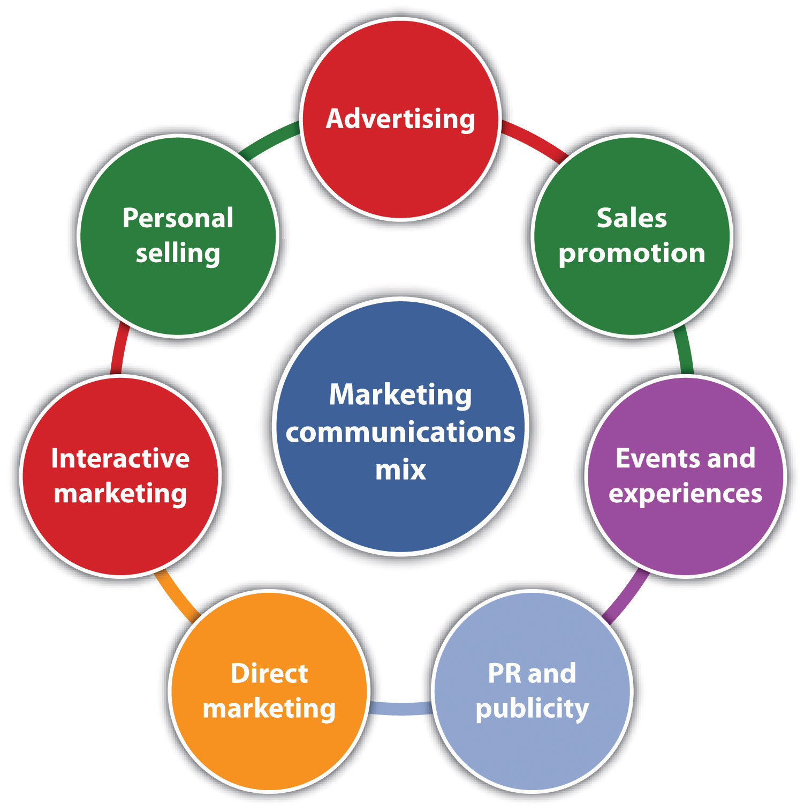

Source: Used with permission from Anita Bruscino.
Anita Bruscino, the sole proprietor of Elegant Touch, began her career as a mechanical engineer. She worked in her family’s manufacturing business until she and her father left because of too many factions in the company. This provided her with the opportunity to start her own business, something she had always known in her heart that she wanted to do.
Anita was inspired to open a gift shop by a family friend who had owned her own gift shop. She gave Anita advice on starting her own business, and Elegant Touch opened in 1994. Anita has since expanded the business and is celebrating the shop’s eighteenth anniversary, with the last six years in its larger location. The shop is warm, lovely, and comfortable, featuring unique gifts for all occasions and specializing in American handcrafted gift items and gift baskets. Shoppers will also find maternity gifts, items for the sweet tooth, specialty foods, special seasonal sectionsLeslie Hutchison, “Elegant Touch Fine Gifts,” CheshirePatch, accessed March 24, 2012, cheshire.patch.com/listings/elegant-touch-fine-gifts.—and a friendly smile from Anita. One thing that you will not find at Elegant Touch is what you find in other gift shops in her market area. When selecting products for her shop, Anita asks vendors whether other stores in the area carry the gift line she is considering. She will not carry duplicates. She likes to see new things and follows the trade magazines to help her do that. When asked how she chooses the products to carry, she described the process as instinctive—“from the gut.”
Anita describes her customer demographics as mostly women, between thirty and seventy years old, married, and established with a home. Because many of her customers are repeat customers, the reason for fresh products is clear. A stale product line is not something that she can afford. Her pricing strategy is consistent with common practice in the industry, but many of her customers have commented that she delivers very high value for the prices she charges. She is not interested in selling online because she does not want to expand any further. She is at a nice comfort level and does not want to deal with the additional inventory implications or the need to hire additional employees. As a result, the Elegant Touch website is for basic information only. In promoting Elegant Touch, Anita says that word of mouth works the best. She advertises in the local paper occasionally, supports local events, and is preparing for her first e-mail blast. She is exploring a Facebook presence but is not yet convinced that it will be of much value to her business.
Like all small businesses, Elegant Touch has been impacted by the ups and downs in the economy, with some times being tougher than others. Because Anita has only two part-time employees, however, she has not been faced with the employee layoffs that have hit other small companies. When asked what keeps her going in the rough times, she answered, “You have to love it.” Just walk into her gift shop, and you will see clearly that she does.Except for the content from CheshirePatch.com, all information herein is based on an interview with Anita Bruscino, owner of Elegant Touch, March 2, 2012.
Small-business marketing and big business marketing are not the same. The basic marketing principles that guide both are the same, but there are important differences with respect to scope, budget, risk factors, and areas of opportunity.Lynne Saarte, “Small Business Marketing Is Different from Big Business Marketing,” Articlecity, accessed December 1, 2011, www.articlecity.com/articles/marketing/article_4959.shtml; Lyndon David, “Small Business Marketing Strategy: How Different Is It from Larger Businesses?,” Slideshare, accessed December 1, 2011, www.slideshare.net/lyndondavid/small-business-marketing-strategy-how-different -is-it-from-larger-businesses. (See Chapter 6 "Marketing Basics" for a discussion of marketing principles.) Small businesses cannot compete with the marketing budgets of big companies. As a result, small businesses do not have the luxury of large staffs and the staying power that comes with high profits. There is little room for error. Failed strategies can lead to ruin.
The scope of small business marketing does not extend across the same level of multiple products and services that characterize most big businesses. Combined with having few if any products in the pipeline, this significantly reduces the insulation that small businesses have against ups and downs in the marketplace or strategic failures. “Small business marketing strategies have to be more targeted, cost-effective and more elaborately planned [s]o as to minimize the losses in case the strategy fails.”Lyndon David, “Small Business Marketing Strategy: How Different Is It from Larger Businesses?,” Slideshare, accessed December 1, 2011, www.slideshare.net/lyndondavid/small-business-marketing-strategy-how-different-is-it-from-larger -businesses.
Competition is the most significant risk factor facing small businesses. Trying to eliminate an established brand takes a lot of work, but it is an overnight job to wipe out a small business. Competition is a huge threat for small businesses.Lyndon David, “Small Business Marketing Strategy: How Different Is It from Larger Businesses?,” Slideshare, accessed December 1, 2011, www.slideshare.net/lyndondavid/small-business-marketing-strategy-how-different-is-it-from-larger -businesses. This means that small businesses should be very knowledgeable about their competition to deal effectively with them.
Opportunity areas for small businesses are also very different from those of big businesses. The small business can take advantage of niche markets and local needs and wants. They are much better able to emphasize personal, one-to-one interactions and can market real time in ways that cannot be matched by big businesses. Smaller can actually end up being more powerful.Ann Handley, “Act Your Shoe Size, Not Your Age: 3 Ways to Market Smaller in 2011,” MarketingProfs, January 3, 2011, accessed December 1, 2011, www.mpdailyfix.com/3-ways-to-market-smaller-in-2011.
Given the special marketing vulnerabilities of small businesses, the importance of understanding the components of a marketing strategySelecting one or more target markets, making differentiation and positioning decisions, and creating and maintaining a marketing mix—all within the context of marketing objectives. should be clear. A marketing strategy involves selecting one or more target markets, deciding how to differentiate and position the product or the service, and creating and maintaining a marketing mix that will hopefully prove successful with the selected target market(s)—all within the context of marketing objectivesWhat a company wants to accomplish with its marketing strategy.. Marketing objectives are what a company wants to accomplish with its marketing strategy: “Strategy is not a wish list, set of goals, mission statement, or litany of objectives…A marketing strategy is a clear explanation of how you’re going to get there, not where or what there is. An effective marketing strategy is a concise explanation of your stated plan of execution to reach your objectives…Marketing without strategy is the noise before failure.”John Jantsch, “Marketing without Strategy Is the Noise before Failure,” Duct Tape Marketing, November 29, 2010, accessed December 1, 2011, www.ducttapemarketing.com/blog/2010/11/29/marketing-without-strategy-is-the -noise-before-failure.
The focus of this text is on the management of the small business that is up and running as opposed to a start-up operation. As a result, the considerations of marketing strategy are twofold: (1) to modify or tweak marketing efforts already in place and (2) to add products or services as the business evolves. In some instances, it may be appropriate and desirable for a small business to backfit its marketing activities into a complete marketing strategy framework.
The marketing strategy process consists of several components (Figure 7.1 "Marketing Strategy Process"). Each component should be considered and designed carefully: company vision, company mission, marketing objectives, and the marketing strategy itself.
Figure 7.1 Marketing Strategy Process

Source: Susan I. Reid, “How to Write a Great Business Vision Statement,” Alkamae, February 23, 2009, accessed December 2, 2011, http://alkamae.com/content.php?id=285; “Marketing Plan: Marketing Objectives and Strategies,” Small Business Notes, accessed December 2, 2011, http://www.smallbusinessnotes.com/starting-a-business/marketing-plan-marketing-objectives-and-strategies.html.
It is awfully important to know what is and what is not your business.Jay Ebben, “Developing Effective Vision and Mission Statements,” Inc., February 1, 2005, accessed December 1, 2011, www.inc.com/resources/startup/articles/20050201/missionstatement.html.
Gertrude Stein
The vision statementA document that articulates the long-term purpose and idealized notion of what the business wishes to become. tries to articulate the long-term purpose and idealized notion of what a business hopes to become. (Where do we see the business going?) It should coincide with the founder’s goals for the business, stating what the founder ultimately envisions the business to be.Jay Ebben, “Developing Effective Vision and Mission Statements,” Inc., February 1, 2005, accessed December 1, 2011, www.inc.com/resources/startup/articles/20050201/missionstatement.html. The mission statementA document that articulates the fundamental nature of the business. It should address what business the company is in, the company’s potential customers, and how customer value will be provided. looks to articulate the more fundamental nature of a business (i.e., why the business exists). It should be developed from the customer’s perspective, be consistent with the vision, and answer three questions: What do we do? How do we do it? And for whom do we do it?
Both the vision statement and the mission statement must be developed carefully because they “provide direction for a new or small firm, without which it is difficult to develop a cohesive plan. In turn, this allows the firm to pursue activities that lead the organization forward and avoid devoting resources to activities that do not.”Jay Ebben, “Developing Effective Vision and Mission Statements,” Inc., February 1, 2005, accessed December 1, 2011, www.inc.com/resources/startup/articles/20050201/missionstatement.html. Although input may be sought from others, the ultimate responsibility for the company vision and mission statements rests with the small business owner. The following are examples of both statements:
Marketing objectives are what a company wants to accomplish with its marketing. They lay the groundwork for formulating the marketing strategy. Although formulated in a variety of ways, their achievement should lead to sales. The creation of marketing objectives is one of the most critical steps a business will take. The company needs to know, as precisely as possible, what it wants to achieve before allocating any resources to the marketing effort.
Marketing objectives should be SMART: specific, measurable, achievable, realistic, and time-based (i.e., have a stated time frame for achievement). It has been recommended that small businesses limit the number of objectives to a maximum of three or four. If you have fewer than two objectives, you aren’t growing your business like you should be in order to keep up with the market. Having more than four objectives will divide your attention, and this may result in a lackluster showing on each objective and no big successes.“How to Choose Marketing Plan Objectives,” accessed January 24, 2012, www.hellomarketing.biz/planning-strategy/marketing-plan-objectives.php. If a small business has multiple marketing objectives, they will have to be evaluated to ensure that they do not conflict with each other. The company should also determine if it has the resources necessary to accomplish all its objectives.Adapted from “Marketing Plan: Marketing Objectives and Strategies,” Small Business Notes, accessed December 1, 2011, www.smallbusinessnotes.com/starting -a-business/marketing-plan-marketing-objectives-and-strategies.html.
For small businesses that already have, or are looking to have, a web presence and sell their products or services online, e-marketingInformation technology applied to traditional marketing. objectives must be included with all other marketing objectives. E-marketing is defined as “the result of information technology applied to traditional marketing.”Judy Strauss and Raymond Frost, E-Marketing (Upper Saddle River, NJ: Pearson Prentice Hall, 2009), 6. The issues of concern and focus will be the same as for traditional marketing objectives. The difference is in the venue (i.e., online versus onground). Examples of e-marketing objectives are as follows: to establish a direct source of revenue from orders or advertising space; improve sales by building an image for the company’s product, brand, and/or company; lower operating costs;Bobette Kyle, “Marketing Objectives for Your Website,” WebSiteMarketingPlan.com, December 10, 2010, accessed December 1, 2011, www.websitemarketingplan.com/marketing_management/marketingobjectivesarticle.htm. provide a strong positive customer experience; and contribute to brand loyalty. The ultimate objective, however, will be “the comprehensive integration of e-marketing and traditional marketing to create seamless strategies and tactics.”Judy Strauss and Raymond Frost, E-Marketing (Upper Saddle River, NJ: Pearson Prentice Hall, 2009), 5.
With its focus being on achieving the marketing objectives, marketing strategy involves segmenting the market and selecting a target or targets, making differentiation and positioning decisions, and designing the marketing mix. The design of the product (one of the four Ps) will include design of the company website. Differentiation refers to a company’s efforts to set its product or service apart from the competition, and positioning is placing the brand (whether store, product, or service) in the consumer’s mind in relation to other competing products based on product traits and benefits that are relevant to the consumer.Dana-Nicoleta Lascu and Kenneth E. Clow, Essentials of Marketing (Mason, OH: Atomic Dog Publishing, 2007), 179. These steps are discussed in Section 7.3 "Segmentation and the Target Market" through Section 7.8 "Marketing Strategy and Promotion". It has been said that “in some cases strategy just happens because a market and a product find each other and grow organically. However, small businesses that understand the power of an overarching marketing strategy, filtered and infused in every tactical process, will usually enjoy greater success.”John Jantsch, “The Cycle of Strategy,” Duct Tape Marketing, March 29, 2010, accessed December 1, 2011, www.ducttapemarketing.com/blog/2010/03/29/the-cycle-of -strategy.
Whether market segments and target markets are selected on the basis of intuition, marketing research, or a combination of the two, they are the basis for creating an effective marketing mix for any small business. Segmentation and target market decisions must be made for both onground and online customers.
Market segmentationDividing the market into several portions that are different from each other. It involves recognizing that the market at large is not homogeneous., dividing a market into relatively homogeneous subgroups that behave much the same way in the marketplace, is the necessary precursor to selecting a target market or target markets. The extensive bases on which a company is able to segment a market are presented in Table 6.1 "Market Segmentation". The challenge is knowing which group(s) to select. Many small business owners have a good intuitive sense of the segments that make sense for the business, and they choose to go with that intuition in devising their marketing strategy. However, that intuition may not be precise or current enough to be of the most help in planning a marketing strategy. Marketing research can be of help here, even to the smallest of businesses.
Marketing research can help the small business identify and refine the segments that offer the greatest opportunities. Part of that process will be to identify segments that meet the requirements of measurabilityThe ease with which a segment can be identified and how easily the size of the segment be estimated., substantialityThe segment is large and profitable enough to justify an investment., stabilityWhether consumer preferences are stable over time., accessibilityBeing able to communicate with and reach the segment., actionabilityWhether a small business is capable of designing an effective marketing program that can serve the chosen market segment., and differential responseThe extent to which market segments are easily distinguishable from each other and respond differently to company marketing strategies..Dana-Nicoleta Lascu and Kenneth E. Clow, Essentials of Marketing (Mason, OH: Atomic Dog Publishing, 2007), 175–76. Meeting these requirements will increase the chances for successful segmentation.
Once multiple segments have been identified, it is necessary to select a target market or target markets. If only a single segment has been identified, it becomes the target market.
The selection of a target marketOne or more segments that have been chosen as the focus for business operations. or target markets will be based on the segments that have been identified as having the greatest potential for the business. (In Chapter 6 "Marketing Basics", a target market refers to one or more segments that have been chosen as the focus for business operations.) Only some of the people in the marketplace will be interested in buying and/or using a company’s product or service, and no company has the resources to be all things to all people. Resources are always finite, but this will especially be the case for the small business, so all marketing efforts should be directed as precisely as possible.
Selecting the target market should be guided by several considerations:Susan MaGee, “How to Identify a Target Market and Prepare a Customer Profile,” accessed January 24, 2012, http://edwardlowe.org/erc/?ercID=6378; Adapted from “3 Reasons to Choose a Target Market,” Morningstar Marketing Coach, December 16, 2008, accessed December 1, 2011, www.morningstarmultimedia.com/3-reasons-to-choose-a-target-market.
Choosing the right target market is a critical part of the marketing strategy of a small business. The target market should be the best match for a company’s products and services, thus helping to maximize the efficiency and effectiveness of its marketing efforts.
If a small business wants to go with a niche marketA small, more narrowly defined market that is not being served well or at all by mainstream product or service marketers., the same considerations apply. A niche market is a small, more narrowly defined market that is not being served well or at all by mainstream product or service marketers. The great advantage of pursuing a niche market is that you are likely to be alone there: “other small businesses may not be aware of your particular niche market, and large businesses won’t want to bother with it.”Susan Ward, “Niche Market,” About.com, accessed December 1, 2011, sbinfocanada.about.com/cs/marketing/g/nichemarket.htm. Ideally, a small business marketing to a niche market will be the only one doing so. Niches are very important to small businesses that want to sell pricey chocolates (see, for example, www.cocoadolce.com/about.php). They focus on niches such as weddings, seasonal offerings, and specialty items. They also sell online in order to reach a broader market.
Differentiation and positioning considerations are relevant to each element of the marketing mix as well as to onground and online marketplaces. The small business should be working toward a competitive advantageThe ability to perform in one or more ways that competitors cannot or will not match.—“the ability to perform in one or more ways that competitors cannot or will not match.”Philip Kotler and Kevin Lane Keller, Marketing Management (Upper Saddle River, NJ: Pearson Prentice Hall, 2009), 276.
Differentiation, setting yourself apart from the competition, is one of the most important and effective marketing tools available to small business owners.Bonny Albo, “Making a Business Stand Out from Its Competitors,” Entrepreneurs @ Suite 101, August 9, 2009, accessed December 1, 2011, bonny-albo.suite101.com/marketing-strategy-differentiation-a136498. Effective differentiation can put a business (or a brand) in the top position among the competition, but an ineffective differentiation strategy can leave a business buried in the middle or at the bottom of the pack.Kim T. Gordon, “Dare to Be Different,” April 1, 2005, accessed December 1, 2011, www.entrepreneur.com/article/76736. A successful differentiation strategy cannot be imitated by competitors—but it can bring you great success with consumers.Dan Herman, “The Surprising Secret of Successful Differentiation,” Fast Company, June 7, 2008, accessed December 1, 2011, www.fastcompany.com/blog/dan -herman/outsmart-mba-clones/surprising-secret-successful-differentiation?.
Business Differentiation: Showing Up Differently
(click to see video)Differentiation is everyone’s goal, but few are able to achieve it.
Small businesses, whether business-to-consumer (B2C) or business-to-business (B2B), can differentiate their companies or brands in many different ways: quality, service, price, distribution, perceived customer value, durability, convenience, warranty, financing, range of products/services offered, accessibility, production method(s), reliability, familiarity, product ingredients, and company image are all differentiation possibilities.Bonny Albo, “Making a Business Stand Out from Its Competitors,” Entrepreneurs @ Suite 101, August 9, 2009, accessed December 1, 2011, bonny-albo.suite101.com/marketing-strategy-differentiation-a136498. There are others as well, limited only by the imagination. One way to uncover differentiation possibilities is to examine customer experience with a product or a service by asking the following questions:Ian C. MacMillan and Rita Gunther McGrath, “Discovering New Points of Differentiation,” Harvard Business Review, July–August 1997, 133–145, as cited in Philip Kotler and Kevin Lane Keller, Marketing Management (Upper Saddle River, NJ: Pearson Prentice Hall, 2009), 277.
No matter what the bases are for differentiating a company or a product, the decision should be made carefully with the expectation that the difference cannot be imitated. When customers are asked whether they can tell the difference between a particular small business and its closest competitors, the answer will hopefully be yes.
The “Murals Your Way” Advantage
(click to see video)How Murals Your Way sets itself apart from other wall mural companies.
Bedbug Dog Sniffs Up Profits
An unusual means of differentiation.
money.cnn.com/video/smallbusiness/2010/08/13/sbiz_bedbug_canine.cnnmoney
Positioning is about the mind of the consumer: placing a company or a brand (sometimes they are the same, e.g., Carbonite, CakeLove, and Sugar Bakery & Sweet Shop) in the consumer’s mind in relation to the competition.Al Ries and Jack Trout, Positioning: The Battle for Your Mind (New York: McGraw-Hill, 2001), 3.
The positioning decision is often the critical strategic decision for a company or a brand because the position can be central to customers’ perception and choice decisions. Further, because all elements of the marketing program can potentially affect the position, it is usually necessary to use a positioning strategy as a focus for developing the marketing program. A clear positioning strategy can ensure that the elements of the marketing program are consistent and supportive.David A. Aaker and Gary Shansby, “Positioning Your Product,” Business Horizons, May–June 1982, 56–62.
Both big and small businesses practice positioning, but small businesses may not know it as positioning. The small business owner thinks about positioning intuitively, does not use the terminology, and does not always know how to promote the position. Additionally, in many if not most small businesses, “the positioning of products is based on the opinions of the business owner, his or her family, and selected friends and family.”“Product Positioning,” Inc., accessed December 1, 2011, www.inc.com/encyclopedia/product-positioning.html. This notwithstanding, an understanding of positioning should be in every small business owner’s tool kit.
Small-Business Market Position
(click to see video)Small-business owners must figure out how the company should be positioned.
Successful positioning of a small business or its brand is built on a well-defined target market combined with solid points of differentiation. There are six approaches to positioning that the small business owner should consider:David A. Aaker and Gary Shansby, “Positioning Your Product,” Business Horizons, May–June 1982, 56–62.
Joe’s Redhots will sell premium-quality hot dogs and other ready-to-eat luncheon products to upscale business people in high-traffic urban locations. Joe’s Redhots will be positioned versus other luncheon street vendors as “the best place to have a quick lunch.” The reasons are that Joe’s Redhots have the cleanest carts; the most hygienic servers; the purest, freshest products; and the best value. Prices will be at a slight premium to reflect this superior vending service. Joe’s Redhots will also be known for its fun and promotional personality, offering consumers something special every week for monetary savings and fun.“Positioning Strategy Statement,” Business Owner’s Toolkit, accessed December 1, 2011, www.toolkit.com/small_business_guide/sbg.aspx?nid=P03_7003.
The challenge for a small business is to decide which approach to positioning a company or a brand is the best fit. This decision “often means selecting those associations which are to be built upon and emphasized and those associations which are to be removed or de-emphasized.”David A. Aaker and Gary Shansby, “Positioning Your Product,” Business Horizons, May–June 1982, 56–62. In the process of writing a positioning statement, something that is encouraged as a way to keep the business on track, be aware of the difference between a broad positioning statement and a narrow positioning statement. A broad statement should encompass enough to allow a company to add products without the need to create a new positioning statement on a frequent basis; a narrow positioning statement puts a company in a “specialist” position in its market.Andy LaPointe, “Is Your Positioning Statement Confusing Your Customers?,” Small Business Branding, May 13, 2007, accessed December 1, 2011, www.smallbusinessbranding.com/714/is-your-positioning-statement-confusing -your-customers. The following are some examples:
The key element in the marketing mix is the product. Without it, price, promotion, and place are moot. The same is true for marketing strategy. Fulfilling a company’s vision and mission and achieving its marketing objectives must be led by the product.
There are multiple decisions and considerations that factor into product or service development: features and benefits, product mix, design, brand, the product life cycle, and the company website. Knowing product development issues can be very helpful for even the smallest business that is looking to keep its current product line responsive to the customers while also looking to expand its product line as the company grows (if growth is desired).
Figure 7.2 Factors in Product or Service Decisions

A product has multiple layers: core, augmented, and symbolic. These three layers can help a small business owner understand the product features and benefits that will best deliver value to current and prospective customers. These layers also provide the bases for differentiating and positioning the product. The product layers refer to both products and services and business-to-consumer (B2C) or business-to-business (B2B) customers.
Figure 7.3 The Product Layers

The core layerThe nuts and bolts of a product, its physical anatomy, and its basic features. is the nuts and bolts of a product, its physical anatomy, and its basic features. It is also the basic benefit or problem solution that B2C or B2B customers are looking for. Someone buying an airline ticket, for example, is buying transportation.Dana-Nicoleta Lascu and Kenneth E. Clow, Essentials of Marketing (Mason, OH: Atomic Dog Publishing, 2007), 226. Someone buying an ice cream cone is buying a delicious and fun treat. The core layer is also where considerations of qualityOverall product quality, reliability, and the extent to which a product or a service meets consumers’ needs. begin. Quality “refers to overall product quality, reliability, and the extent to which [the product or the service] meets consumers’ needs,” and the perception of quality has the greatest impact on customer satisfaction.Dana-Nicoleta Lascu and Kenneth E. Clow, Essentials of Marketing (Mason, OH: Atomic Dog Publishing, 2007), 117. Decisions about design, manufacturing, preparation, ingredients, service delivery, component parts, and process materials all reflect a business’s philosophy about quality. The augmented layerWhere additional value is added via things such as packaging, promotion, warranties, guarantees, brand name, design, financing opportunities where appropriate, prompt and on-time service, and additional services that may enhance a product. is where additional value is added via things such as packaging, promotion, warranties, guarantees, brand name, design, financing opportunities where appropriate, prompt and on-time service, and additional services that may enhance a product. The augmented layer for Southwest Airlines is its well-known brand name, its packaging and promotion as a “fun” flying experience, and its “bags fly free” policy. The ice cream cone that is purchased in an old-fashioned ice cream parlor will likely be considered of greater value to many customers than the ice cream cone purchased at a Dairy Queen. It is this layer where many marketing mistakes are made because opportunities are missed. The symbolic layerThe meaning of a product to a consumer—its emotional and psychological connections. captures the meaning of a product to a consumer—its emotional and psychological connections. There are many loyal customers of Southwest Airlines because they really enjoy flying with them. It is inexpensive, convenient, and fun. The old-fashioned ice cream parlor will engender nostalgia and create powerful emotional ties. The most serious marketing errors are made when the symbolic product layer is either ignored or not understood. The power of symbolism should never be underestimated.
Every small business should look at its products within the context of the product layers. It is the creativity and imagination of the small business owner with the product layers that can set a business apart. They provide an excellent basis for dissecting an existing product to see where opportunities may have been missed, features could be added or changed, and features or enhancements could be explained more effectively in promotional activities. The product layers should also be used to develop new products that the business plans to introduce.
All small businesses have a product mix, the selection of products or services that is offered to the marketplace. With respect to the product mix for small companies, a company will usually start out with a limited product mix. However, over time, a company may want to differentiate products or acquire new ones to enter new markets. A company can also sell existing products to new markets by coming up with new uses for its products.Rick Suttle, “What Is a Product Mix?,” Chron.com, accessed December 1, 2011, smallbusiness.chron.com/product-mix-639.html. No matter the approach, the product mix needs to be created so that it is responsive to the needs, wants, and desires of the small business’s target market.
For small businesses engaged in e-marketing, product selection is a key element for online success. Part of the challenge is deciding which products to market online because some products sell better online than others.Jan Zimmerman, Web Marketing for Dummies, 2nd ed. (Hoboken, NJ: Wiley, 2009), 101. If a business has a brick-and-mortar presence, a decision must be made whether all the inventory or only part of it will be sold online. Items that sell well online change over time, so it is important to keep up to date on the changes.Jan Zimmerman, Web Marketing for Dummies, 2nd ed. (Hoboken, NJ: Wiley, 2009), 101. A second decision to be made is the number of items in the catalog (i.e., the number of items you will sell). Given intense online competition and shoppers’ desires for good selections, there needs to be a critical mass of products and choices—unless a company is lucky enough to have a very narrow niche with high demand. If a company has only one or two products to sell, the situation should be evaluated to determine whether selling online will be profitable.Jan Zimmerman, Web Marketing for Dummies, 2nd ed. (Hoboken, NJ: Wiley, 2009), 101–2.
In his book, Re-imagine! Business Excellence in a Disruptive Age,Tom Peters, Re-imagine! Business Excellence in a Disruptive Age (London: Dorling Kindersley Limited, 2003), 132–46. Tom Peters devotes two chapters to the importance of design to business success. He says that design is “the principal reason for emotional attachment (or detachment) relative to a product service or experience”—and he quotes Apple’s CEO, Steve Jobs, in saying that design is the “fundamental soul of a man-made creation.”Tom Peters, Re-imagine! Business Excellence in a Disruptive Age (London: Dorling Kindersley Limited, 2003), 132–146, as cited in Bob Lamons, “Strong Image Design Creates Passion for Firm, Its Products,” Marketing News, April 15, 2005, 7. This is true whether the product comes from a big business or a small business.
Product designAesthetic properties such as color, shape, texture, and entire form plus a consideration of ergonomics, technology, and usability as well as touch, taste, smell, sight, and sound. involves aesthetic properties such as color, shape, texture, and entire form, but it also includes a consideration of function, ergonomics, technology, and usabilityDana-Nicoleta Lascu and Kenneth E. Clow, Essentials of Marketing (Mason, OH: Atomic Dog Publishing, 2007), 242; Dominic Donaldson, “The Importance of Good Product Design,” Artipot, December 8, 2008, accessed December 1, 2011, www.artipot.com/articles/246078/the -importance-of-good-product-design.htm. as well as touch, taste, smell, sight, and sound. The pulling together of these things, as appropriate to the specific product or service being designed, should result in a design that matches customer expectations. “Design represents a basic, intrinsic value in all products and services.”Ted Mininni, “Design: The New Corporate Marketing Strategy,” MarketingProfs, November 5, 2005, accessed December 1, 2011, www.marketingprofs.com/articles/2005/1670/design-the-new-corporate-marketing-strategy.
Design offers a powerful way to differentiate and position a company’s products and services, often giving company a competitive edge.Philip Kotler and Kevin Lane Keller, Marketing Management (Upper Saddle River, NJ: Pearson Prentice Hall, 2009), 325. Improved profit margins from increased sales and increased market share are often the result. It is essential to get the visual design of a product right for the market you are appealing to. It can make the difference between selling a product—or not.Dominic Donaldson, “The Importance of Good Product Design,” Artipot, December 8, 2008, accessed December 1, 2011, www.artipot.com/articles/246078/the -importance-of-good-product-design.htm.
Design is particularly important in making and marketing retail services, apparel, packaged goods, and durable equipment. The designer must figure out how much to invest in form, feature development, performance, conformance, durability, reliability, repairability, and style. To the company, a well-designed product is one that is easy to manufacture and distribute. To the customer, a well-designed product is one that is pleasant to look at and easy to open, install, use, repair, and dispose of. The designer must take all these factors into account.
The arguments for good design are particularly compelling for smaller consumer products companies and start-ups that do not have big advertising dollars.Philip Kotler and Kevin Lane Keller, Marketing Management (Upper Saddle River, NJ: Pearson Prentice Hall, 2009), 325.
Quirky.com is a small business that has taken product design to a whole new level: collaboration. First seen as a “bold but ultimately wild-eyed idea,”Cliff Kuang, “Product-Design Startup Quirky Gets $6 Million in VC Funding,” Fast Company, April 7, 2010, accessed December 1, 2011, www.fastcompany.com/1609737/product-design-startup-quirky-gets-6-million-in-vc-funding. Quirky recently secured $6 million in venture financing. Check out how they operate in Note 7.42 "Video Clip 7.5". A company like this could be very helpful to a small business that is looking to introduce a new product.
Quirky’s Ben Kaufman on Innovation
(click to see video)An innovative approach to product design: collaboration.
Design issues also apply to services. Some of the design issues for services that are delivered in a store (e.g., dry cleaning, repair, and restaurant) are the same as for any retail store: the design of the physical space, the appearance of the personnel, the helpfulness of the personnel, the ease of ordering, and the quality of service delivery. For services that are performed at a customer’s home or at a business site, the design issues include timeliness; the appearance and helpfulness of personnel; the quality of installation, service, and repair; and the ease of ordering the service. The special characteristics of services (i.e., intangibilityA service cannot be seen, smelled, heard, tasted, or touched prior to purchase., perishabilityA service cannot be stored like a physical good., inseparabilityA service is performed and consumed at the same time., and variabilityEach time a service is performed, it will be performed in a different way., as defined in Figure 7.4 "The Characteristics of Services") present design challenges that are different from those faced by physical products.
Figure 7.4 The Characteristics of Services

Source: Adapted from Dana-Nicoleta Lascu and Kenneth E. Clow, Essentials of Marketing (Mason, OH: Atomic Dog Publishing, 2007), 264–68.
Whether a small business is offering a product, a service, or a combination of the two to either the B2C or B2B marketplace, there is no question that excellent product design is a gateway to business success.
The design of the product or the service package is another decision component of the product. PackagingAll the activities of designing and producing the container for a product. can be defined as “all the activities of designing and producing the container for a product.”Philip Kotler and Kevin Lane Keller, Marketing Management (Upper Saddle River, NJ: Pearson Prentice Hall, 2009), 239. Packages “engage us consciously and unconsciously. They are physical structures but at the same time they are very much about illusion. They appeal to our emotions as well as to our reason.”Randall Frost, “Packaging Your Brand’s Personality,” Brandchannel, October 3, 2005, accessed December 1, 2011, www.brandchannel.com/features_effect.asp?pf_id =283. Thus the package communicates both emotional and functional benefits to the buyer, and it can be a powerful means of product differentiation. A well-designed package can build brand equity and drive sales.Philip Kotler and Kevin Lane Keller, Marketing Management (Upper Saddle River, NJ: Pearson Prentice Hall, 2009), 339. A poorly designed package can turn the customer off and can lead to wrap rage—the anger and frustration that results from not being able to readily access a product, which often leads to injuries (see Note 7.48 "Video Clip 7.6"). Although difficult-to-open packaging may be seen as necessary by the manufacturers and retailers, it does not do much for a positive customer experience.
Opening Plastic Clamshells with a Can Opener
(click to see video)Plastic clamshell packages inspire wrap rage. They are easier to open if you start with a can opener.
A brandA name, term, sign, symbol, or design, or a combination of them, intended to identify the goods or the services of one seller or a group of sellers and to differentiate them from those of competitors. is defined by the American Marketing Association as “a name, term, sign, symbol, or design, or a combination of them, intended to identify the goods or services of one seller or group of sellers and to differentiate them from those of competitors…A brand may identify one item, a family of items, or all items of that seller. If used for the firm as a whole, the preferred term is trade name.”“Brand,” American Marketing Association, accessed December 1, 2011, www.marketingpower.com/_layouts/Dictionary.aspx?dLetter=B. A brand is a promise to the consumer that certain expectations will be met, a promise that—if broken—may result in the loss of that customer. A company’s brand is probably its most important asset.
Building a brand is an ongoing process for a small business because it wants a memorable identity. It is important for the business to constantly monitor its brand to ensure that it represents the core values and needs of its existing and potential customers.Miranda Brookins, “How to Brand a Business,” Chron.com, accessed December 1, 2011, smallbusiness.chron.com/brand-business-211.html. The brand needs to reach people on an emotional levelMarc Gobe, Emotional Branding: The New Paradigm for Connecting Brands to People (New York: Allworth Press, 2001), xv. because customers ultimately make decisions on an emotional level, not a logical level. For this reason, a small business should think in terms of tapping into as many senses as possible with its brand. “Almost our entire understanding of the world is experienced through our senses. Our senses are our link to memory and can tap right into emotion.”Martin Lindstrom, Brand Sense: Build Powerful Brands through Touch, Taste, Smell, Sight, and Sound (New York: Free Press, 2005), 10. Scenting the air of a store with a fresh fragrance could be a powerful contributor to the store’s brand.
Whether a small business wants to keep its brand (but may be monitoring it) or is looking to rebrandChanging the brand. (changing the brand), there are four fundamental qualities of great brands that should be kept in mind:Adapted from Patrick Barwise and Sean Meehan, “The One Thing You Must Get Right When Building a Brand,” Harvard Business Review, December 2010, 80–84.
The ultimate objective is to have a brand that delivers a clear message, is easy to pronounce, confirms a company’s credibility, makes an emotional connection with the target market, motivates the buyer, and solidifies customer loyalty.Laura Lake, “What Is Branding and How Important Is It to Your Marketing Strategy?,” About.com, accessed December 1, 2011, marketing.about.com/cs/brandmktg/a/whatisbranding.htm; Dana-Nicoleta Lascu and Kenneth E. Clow, Essentials of Marketing (Mason, OH: Atomic Dog Publishing, 2007), 230.
Good Branding Will Build a Company
(click to see video)A strong branding and marketing strategy is an investment that will pay dividends for years to come.
Small Business Branding Tips
(click to see video)A small business owner talks about the importance and mechanisms of creating a strong and memorable company brand.
Every product has a life span. Some are longer than others. The pet rock had a very short life span. The automobile is still going strong. Some products or services experience an early death, not able to make it very far out the door. Take, for example, Colgate Kitchen Entrees (yes, as in the toothpaste); Cosmopolitan Yogurt (off the shelves in eighteen months); and Ben-Gay Aspirin (the idea of swallowing Ben-Gay was not a winner).“Top 25 Biggest Product Flops of All Time,” Daily Finance, accessed December 1, 2011, www.dailyfinance.com/photos/top-25-biggest-product-flops-of-all-time.
Even the big guys make mistakes, so small businesses are not immune from product goofs. The products that do make it, however, go through what is known as the product life cycle (PLC)The performance of a product in terms of sales and profits over time., defined as “the performance of the product in terms of sales and profits over time.”Dana-Nicoleta Lascu and Kenneth E. Clow, Essentials of Marketing (Mason, OH: Atomic Dog Publishing, 2007), 244. The traditional PLC is shown in Figure 7.5 "The Traditional Product Life Cycle".
Figure 7.5 The Traditional Product Life Cycle

Source: “The Product Life Cycle,” NetMBA, accessed December 2, 2011, http://www.netmba.com/marketing/product/lifecycle.
Small-business owners should understand the PLC because there are specific implications for marketing strategy. The product development (incubation) stageWhen a product is being prepared for sale. is when a product is being prepared for sale. There are costs but no sales. The product introduction stageWhen a product is available to buy for the first time. is when a product is available to buy for the first time. Sales will generally be low but increasing, marketing expenses will be high, and profits will be typically low or nonexistent. The focus of the marketing strategy will be to create awareness, establish a market, and create demand for the product.Philip Kotler and Kevin Lane Keller, Marketing Management (Upper Saddle River, NJ: Pearson Prentice Hall, 2009), 339; Dana-Nicoleta Lascu and Kenneth E. Clow, Essentials of Marketing (Mason, OH: Atomic Dog Publishing, 2007), 244; Kristie Lorette, “How Would the Marketing Mix Change at Different Stages of the Product Life Cycle?,” Chron.com, accessed December 1, 2011, smallbusiness.chron.com/would-marketing-mix-change-different-stages-product-life-cycle-3283.html. The product growth stageWhen sales grow rapidly as the target market adopts a product and competition enters the marketplace once it observes the success. is when sales grow rapidly as the target market adopts a product and competition enters the marketplace once it observes the success. Marketing strategy should focus on differentiation and building a brand preference. There is substantial profit improvement.Philip Kotler and Kevin Lane Keller, Marketing Management (Upper Saddle River, NJ: Pearson Prentice Hall, 2009), 339; Dana-Nicoleta Lascu and Kenneth E. Clow, Essentials of Marketing (Mason, OH: Atomic Dog Publishing, 2007), 244; Kristie Lorette, “How Would the Marketing Mix Change at Different Stages of the Product Life Cycle?,” Chron.com, accessed December 1, 2011, smallbusiness.chron.com/would-marketing-mix-change-different-stages-product-life-cycle-3283.html. Rapid growth must be managed carefully so that the company does not succeed into failure. The product maturity stageCharacterized by slow growth because most of the buyers interested in a product have bought it. is characterized by slow growth because most of the buyers interested in a product have bought it. Sales may increase but slowly due to intense price competition. Profits stabilize or decline. The marketing strategy must focus on getting people to switch brands by using special promotions and incentives.Philip Kotler and Kevin Lane Keller, Marketing Management (Upper Saddle River, NJ: Pearson Prentice Hall, 2009), 339; Dana-Nicoleta Lascu and Kenneth E. Clow, Essentials of Marketing (Mason, OH: Atomic Dog Publishing, 2007), 244; Kristie Lorette, “How Would the Marketing Mix Change at Different Stages of the Product Life Cycle?,” Chron.com, accessed December 1, 2011, smallbusiness.chron.com/would-marketing-mix-change-different-stages-product-life-cycle-3283.html. The product decline stageWhen sales decline and profits erode. is when sales decline and profits erode. A product has become obsolete because of an innovation (think VHS to DVD to Blu-Ray) or the tastes of the target market have changed. The marketing strategy works to reinforce the brand image of the product. The product may be dropped from the product line or rejuvenated if possible and practical.
There are many small business owners who may not see the PLC as applying to their products or services. After all, accounting services are accounting services, a luncheonette is a luncheonette, and hardware is hardware. Thinking this way would be a mistake. Accounting practices change, people’s tastes change, hardware solutions change, and government regulation inserts itself. What is successful today may not be successful tomorrow. The PLC provides guidance for watching how a product or a service progresses in the marketplace so that the necessary marketing strategy steps can be taken.
If the development of a new product is being considered, the following steps are suggested as guidance:
A company’s website is part of its product or service. The conventional wisdom is that all businesses should have a website. The reality is that there are many small businesses that do very well for themselves without a web presence. The small local deli, accounting or insurance services, a legal firm, a liquor store, or a dental office may not see the need for a website. At the same time, customers are increasingly expecting a web presence, so any small business that does not have a website runs the risk of losing sales because of it. The time may also be approaching when not having a website will be perceived as odd, with questions raised as to the seriousness of the business. Every small business without a website should determine whether this matters to them or not.
This section about the company website is targeted to the small business that has a web presence already or is planning to have one. A small business owner should have a basic understanding of website design to contribute to the discussion and communicate effectively when working with professionalsEfraim Turban et al., Electronic Commerce: A Managerial Perspective (Upper Saddle River, NJ: Pearson Prentice Hall, 2008), 751.—as well as to organize the owner’s visceral reaction when it is time to evaluate other websites, plan the company’s website, or revise the company’s current website.Jan Zimmerman, Web Marketing for Dummies, 2nd ed. (Hoboken, NJ: Wiley, 2009), 67. In addition, any commitment to e-marketing requires a website.
Stanford University’s Persuasive Technology Lab found that people quickly evaluate a website by visual design alone, with the visual design setting the tone for the user’s experience.Lorrie Thomas, Online Marketing (New York: McGraw-Hill, 2011), 22–23. “Image is everything online. Good design evokes trust, makes navigation clear, establishes branding, appeals to target customers, and makes them feel good about doing business with the website they are on. Design does not have to be expensive for it to work. It does, however, need to represent an organization and appeal to a visitor. Professional design is not something organizations spend money on; it is something they invest in to support trust, positioning, and long-term marketing” (emphasis added).Lorrie Thomas, Online Marketing (New York: McGraw-Hill, 2011), 23.
This section of the chapter discusses website objectives and the fundamental design elements: layout, color, typography, graphics, interactivity, navigation, usability, content, and performance. User experience is also discussed.
Top Web Design Mistakes Small and Large Businesses Make
(click to see video)Four mistakes that small businesses should watch for when designing their websites.
“The goal of any Web site is to deliver quality content to its intended audience and to do so with an elegant design.”Efraim Turban et al., Electronic Commerce: A Managerial Perspective (Upper Saddle River, NJ: Pearson Prentice Hall, 2008), 751. Website objectivesWhat a company wants its website to do. define what a company wants its website to do. For example, a website can build awareness of the business; build awareness of particular brands or services; distribute information to supporters, customers, and stakeholders on products or issues; sell products or services; build relationships with customers; develop a new marketing strategy or reinforce an existing strategy; manage an event (e.g., online registration and payment); build the company image; and gather marketing research by collecting data from users or conducting online surveys.“What Are the Objectives of Your Web Site?,” 3w designs, accessed December 1, 2011, www.3w-designs.co.uk/textonly/new-web-site-aims.html. Whichever objective or combination of objectives is chosen, each objective should meet the criteria discussed in Section 7.2 "The Marketing Strategy Process". Clear-cut objectives will increase the chances that a company’s website design and content will work to achieve those objectives.Ottavio Storace, “How to Build a Web Site That Achieves Objectives,” Webmaster Resources @ Suite 101, July 13, 2009, accessed December 1, 2011.
LayoutThe positioning of the various elements that comprise a web page. refers to the positioning of the various elements that comprise a web page: where each text object will be positioned on each page or screen, the width and length of columns, the amount of space that will be placed between the lines of text, the alignment to be used (e.g., left or right), whether the page will be text only or use more advanced designs (e.g., multiple columns),“Glossary of Web Terminology: Website Layout,” April 5, 2010, accessed January 24, 2012, www.azurewebdesign.com/glossary-of-web-terminology; Sue A. Conger and Richard O. Mason, Planning and Designing Effective Web Sites (Cambridge, MA: Course Technology, 1998), 96. and the placement of graphics. Layout is important because it is one of the first things a visitor perceives when landing on a website. Research shows that “web users spend 69% of their time viewing the left half of the page and 30% viewing the right half, [so] a conventional layout is thus more likely to make sites profitable.”Jakob Nielsen, “Horizontal Attention Leans Left,” Useit.com, April 6, 2010, accessed December 1, 2011, www.useit.com/alertbox/horizontal-attention.html.
Color is a powerful component of design. It affects mood and emotion, and it evokes associations with time and place. For example, psychedelic color combinations take us back to the 1960s, and turquoise and yellow combinations remind us of art deco in the 1950s. For websites, color is important in defining a site’s environment because “people see color before they absorb content.”“Welcome to Color Voodoo Publications,” Color Voodoo, accessed December 1, 2011, www.colorvoodoo.com. A lasting color impression occurs within ninety seconds and accounts for 60 percent of acceptance. What are the implications for website design? Decisions regarding color can be highly important to success.
The key to the effective use of color in website design is “to match the expectations of the target audience. Financial services sites tend to use formal colors (e.g., green or blue) with simple charts to illustrate the text but not many pictures. Sites directed at a female audience tend to feature lighter colors, usually pastels, with many pictures and an open design featuring lots of white space. Game sites are one type of site that can get away with in-your-face colors, Flash effects, and highly animated graphics.”Efraim Turban et al., Electronic Commerce: A Managerial Perspective (Upper Saddle River, NJ: Pearson Prentice Hall, 2008), 751.
Colors should be selected that reflect the purpose of the site and enhance the design. Understanding the meaning of color and the cultural use of color and how colors interact is important in website design to convey the right tone and message and evoke the desired response to the site.Jacci Howard Bear, “The Meaning of Color,” About.com, accessed December 1, 2011, desktoppub.about.com/od/choosingcolors/p/color_meanings.htm?p=1. The wrong choice could adversely affect a visitor’s experience at the site,Joanne Glasspoole, “Choosing a Color Scheme,” Metamorphosis Design, accessed December 1, 2011, www.metamorphozis.com/content_articles/web_design/Choosing_A_Color_Scheme.php. which could adversely affect a company’s sales and image.
Color Psychology in Web Design
(click to see video)Insights into color and its importance in website design.
“The following list provides the traditional meanings of common colors and suggests compatible business usage:
“TypographyThe use of typefaces (or fonts) in a design. is the art of designing a communication by using the printed word.”Colin Wheildon, Type & Layout: How Typography and Design Can Get Your Message Across—or Get in the Way (Berkeley, CA: Strathmoor Press, 1996), 19. More specifically, it is the use of typefaces (or fonts)A specific type or font. in a design. Typeface refers to a particular type or font (e.g., Times New Roman and Arial). Typography is an integral part of web design and plays a role in the aesthetics of the website.Shannon Noack, “Basic Look at Typography in Web Design,” Six Revisions, April 7, 2010, accessed December 1, 2011, sixrevisions.com/web_design/a-basic -look-at-typography-in-web-design. About 95 percent of the information on the web is written language, so it is only logical that a web designer should understand the shaping of written information (i.e., typography).Oliver Reichenstein, “Web Design Is 95% Typography,” Information Architects, Inc., October 19, 2006, accessed December 1, 2011, www.informationarchitects.jp/en/the-web-is-all-about-typography-period. It is possible to blow away more than 50 percent of website visitors and readers by choosing the wrong typeface.Colin Wheildon, Type & Layout: How Typography and Design Can Get Your Message Across—or Get in the Way (Berkeley, CA: Strathmoor Press, 1996), 19.
GraphicsPictures, artwork, animations, or videos., defined as pictures, artwork, animations, or videos, can be very effective if used correctly. Graphics can provide interest, information, fun, and aesthetics, but they can also take forever to load, be meaningless or useless, not fit on the screen, and use colors that are not browser safe colorsColors that look the same on PC and Macintosh operating systems. (i.e., colors that look the same on PC and Macintosh operating systems). Images enhance a web page, but they should be selected and placed carefully.
Graphics should be used to “convey the appropriate tone of your message. As the old saying goes, a picture is worth a thousand words. Make sure your images correspond to the text and are appropriate to the business you offer. For example, an audiologist shouldn’t use a picture of a woman holding her glasses because the spotlight should be on hearing.”Lena Claxton and Alison Woo, How to Say It: Marketing with New Media (New York: Prentice Hall, 2008), 35. Graphics should also help create a mood, or a sense of place. The use of the graphics has to be thoroughly considered because they slow the loading of a website.“When to Use Graphics on Your Website,” Improve the Web, May 9, 2007, accessed December 1, 2011, www.improvetheweb.com/when-use-graphics-your-site.
It has been shown that quality images boost sales and enhance the visitor experience. “Consumers who browse products on websites want to see the products they’re considering for purchase represented by the highest quality image possible…People do not buy what they cannot see, so the higher the quality and resolution of [the] imagery, the better [the] results will be.”Dave Young, “Quality Images Boost Sales,” Practical eCommerce, March 14, 2007, accessed December 1, 2011, www.practicalecommerce.com/articles/436-Quality -Images-Boost-Sales. The key for any small business that wants graphics on its website is to consider how the graphics will add value to the user experience. The graphics should be for the direct benefit of the user, not the business. Do not get carried away with lots of images and animations because they can make a web page very hard to read. Graphics are a major part of the design, not just afterthoughts.Jennifer Kyrnin, “Basics of Web Layout,” About.com, accessed December 1, 2011, webdesign.about.com/od/layout/a/aa062104.htm.
People will not use a website if they cannot find their way around it. If web users cannot find what they are looking for or figure out how the site is organized, they are not likely to stay long—or come back.Steve Krug, Don’t Make Me Think: A Common Sense Approach to Web Usability (Berkeley, CA: New Riders Publishing, 2000), 51. “The purpose of site navigationThe design to help visitors quickly and easily find the information they need on a website. is to help visitors quickly and easily find the information they need on a website. Among the questions considered in site navigation are, How will visitors enter a site? How will visitors use the site? How will they find out what is available at the site? How will they get from one page to another and from one section to another? How will visitors find what they are looking for?”Efraim Turban et al., Electronic Commerce: A Managerial Perspective (Upper Saddle River, NJ: Pearson Prentice Hall, 2008), 754.
Site navigation must be easy, predictable, consistent, and intuitive enough so that visitors do not have to think about it.Efraim Turban et al., Electronic Commerce: A Managerial Perspective (Upper Saddle River, NJ: Pearson Prentice Hall, 2008), 754. “Designing effective navigation can also entice your visitors to try out the other things you offer on your site.”“Website Navigation Tips,” Entheos, accessed December 1, 2011, www.entheosweb.com/website_design/website_navigation_tips.asp. The key to understanding navigation is to realize that if it is too hard to use or figure out, web visitors will be gone in a nanosecond, perhaps never to be seen again. What does this mean to a small business? Lost sales and lost opportunities.
A website’s usabilityA website’s ease of use., or ease of use, “can make or break an online experience, and it is directly correlated to the success of the site.”Lorrie Thomas, Online Marketing (New York: McGraw-Hill, 2011), 38. Website usability measures the quality of a user’s experience when interacting with a website,“Usability Basics,” Usability.gov, accessed December 1, 2011, www.usability.gov/basics/index.html. and it works hand in hand with site navigation. According to usability.gov, usability is a combination of five factors:“Usability Basics,” Usability.gov, accessed December 1, 2011, www.usability.gov/basics/index.html.
Usability is necessary for survival on the Internet. If a website is difficult to use, people will leave,Efraim Turban et al., Electronic Commerce: A Managerial Perspective (Upper Saddle River, NJ: Pearson Prentice Hall, 2008), 756. and they may be inclined to tell everyone they know on Facebook and Twitter about their negative experiences. It is as simple—and as serious—as that. Small-business owners should consider postlaunch usability testing to help ensure the best user experience. Three free tools are HubSpot’s Website Grader, SiteTuners, and Google Analytics.
Site interactivityThings on a company’s website site that prompt some kind of action from visitors. is about things on a company’s website site that prompt some kind of action from visitors.“Web Development Glossary for Small Businesses,” Lightwave Communications, accessed December 1, 2011, www.lightwavewebdesign.com/web-development -glossary/website-glossary-g-i.html. Visitors become engaged with the site, they stay longer, they look deeper into the site to see what the company is offering, they are less likely to jump to another site, and they feel that they are part of a community and connected. This will keep them coming back to the site.Folusho Orokunie, “Do Not Make Your Website Visitors Yawn! Make Your Site Interactive,” accessed December 1, 2011, folusho.com/do-not-make-your-website-visitors -yawn-make-your-site-interactive.
There are many ways in which a small business can provide interactivity on its site. The following are some examples:“Examples of Possible Interactive Features on Your Website,” Zamba, accessed December 1, 2011, www.zambagrafix.com/interact.htm; “Importance of Web Interactivity: Tips and Examples, Hongkiat.com, accessed December 1, 2011, www.hongkiat.com/blog/importance-of-web-interactivity-tips-and-examples.
The sources of interactivity on a website are limited only by a small business owner’s creativity and, of course, budget. However, it should never be a question of saying yes or no to interactivity. It is a matter of how much, what kind, and where. Remember that when customers feel compelled to do something, they are that much closer to buying.“Importance of Interactive Websites,” Thunder Data Systems, accessed December 1, 2011, www.thunderdata.com/thunder_bits/importance_of_interactive_websites .html.
ContentAll the words, images, products, sound, video, interactive features, and any other material that a business puts on its website. refers to all the words, images, products, sound, video, interactive features, and any other material that a business puts on its website.Efraim Turban et al., Electronic Commerce: A Managerial Perspective (Upper Saddle River, NJ: Pearson Prentice Hall, 2008), 744; Jan Zimmerman, Web Marketing for Dummies, 2nd ed. (Hoboken, NJ: Wiley, 2009), 67. It is the content that visitors are looking for, and it is what will keep them on the site. High-quality content will also keep people interested so that they come back for more. “A poorly and ineffectively ‘written’ website has an adverse impact on the efficiency of the website. Moreover, it also gives a negative impression of the brand [or company] behind it. Without good ‘content’ a website is an empty box.”JPDC, “The Importance of Visitor-Oriented Online Content on Your Website,” Mycustomer.com, June 12, 2009, accessed December 1, 2011, www.mycustomer.com/blogs/marketingadvisor/marketing-advisor/importance-visitor-oriented-online -content-your-website.
Good content is relevant, customer-centric (i.e., it is written in the language and words of the target audience(s) that visit the website), and complies with what we know about how people read online content. They don’t. They scan it—because it takes 25 percent longer to read the same material online than it does to read it on paper.Jan Zimmerman, Web Marketing for Dummies, 2nd ed. (Hoboken, NJ: Wiley, 2009), 73. If a company’s content does not fit its target audience(s), the website will not generate good results.JPDC, “The Importance of Visitor-Oriented Online Content on Your Website,” Mycustomer.com, June 12, 2009, accessed December 1, 2011, www.mycustomer.com/blogs/marketingadvisor/marketing-advisor/importance-visitor-oriented-online -content-your-website.
Most small businesses may think that they must generate all website content. However, some of the best and most successful content may be the easiest to create: the content generated by website users. Interestingly, it is not uncommon for user-generated content to get higher search engine rankings than a business’s home page, not an insignificant fact.Lorrie Thomas, Online Marketing (New York: McGraw-Hill, 2011), 55. User-generated content includes the following:Lorrie Thomas, Online Marketing (New York: McGraw-Hill, 2011), 55.
The gold standard of user-generated content is customer reviews. Customer reviews can increase site traffic by as much as 80 percent, overall conversions by 60 percent, and the average order value by 40 percent. With respect to the posting of both positive and negative reviews, it has been shown that “users trust organizations that post both negative and positive reviews of their product if organizations address the feedback constructively.”Lorrie Thomas, Online Marketing (New York: McGraw-Hill, 2011), 56.
There are many factors that will contribute to the success of a small business website. However, the website will not do as well as it should, and it will not reach its full potential, without good quality content.“Content Is King—Good Content Holy Grail of Successful Web Publishing,” The Media Pro, August 14, 2010, accessed December 1, 2011, www.themediapro.com/earn-sleeping/content-is-king-holy-grail-of-successful-web-publishing.
The Value of the About Page
Why the “About” page is so important to a business website.
videos.smallbusinessnewz.com/2011/01/26/the-value-of-the-about-page
How a website displays products will impact the success of the website. As a result, product display should be seen as a website design issue. Key decisions that should be made for each category of product that is available on the website include the choice of which products to feature, how to provide product detail pages (an individual page for each product is preferable because there is more room for product details), the sort options that will be available to the shopper (e.g., price), and where items on special will be placed on the page (the upper right corner is recommended).Jan Zimmerman, Web Marketing for Dummies, 2nd ed. (Hoboken, NJ: Wiley, 2009), 103.
No matter how well designed a website is, and no matter how high the quality of content, a website that takes too long to load will lose visitors. A website’s loading speedHow fast the pages respond to a user request. determines how fast the pages respond to a user request. Faster site speed is preferred by the users who want an optimal browsing experience, and the small business that wants increasing incoming connections and high sales. Users want faster speeds.“Google Finally Sets the Record Straight: Website Speed Is a Legit Search Ranking Factor,” Linkbuilding.net, June 13, 2010, accessed December 1, 2011, linkbuilding.net/2010/06/13/google-finally-sets-the-record-straight-website-speed-is-a-legit -search-ranking-factor.
Visiting a fast-loading site is a pleasant experience. Visiting a slow-loading site is not. Surveys now show that a person will wait less than three seconds (perhaps even less) for a webpage to load before leaving, with a one-second delay possibly meaning a 7 percent reduction in sales.Imad Mouline, “Is Your Website Fast Enough for Your Customers?,” CNN Money, August 27, 2010, accessed June 1, 2012, http://tech.fortune.cnn.com/2010/04/27/is-your-website-fast-enough-for-your-customers/#more-24083. Google claims that the amount of site traffic drops by 20 percent for every 0.5 seconds of load time.“Improving Site Speed and Load Times,” Optimum7.com, April 6, 2010, accessed December 1, 2011, www.optimum7.com/internet-marketing/website-speed/improving-site-speed-and-load-time.html.
There are several factors that slow down the loading time for a website, not the least of which is the connection speed of the user’s computer. This is out of the control of the web designer and the site owner (the small business). The biggest culprit, however, is a large graphic or several small graphics on a single page.Efraim Turban et al., Electronic Commerce: A Managerial Perspective (Upper Saddle River, NJ: Pearson Prentice Hall, 2008), 755. There are ways around this, known by any credible website designer. The impact of “slow down” features should be tested before the site launches and monitored afterwards.Imad Mouline, “Is Your Website Fast Enough for Your Customers?,” CNN Money, August 27, 2010, accessed June 1, 2012, http://tech.fortune.cnn.com/2010/04/27/is-your-website-fast -enough-for-your-customers/#more-24083. The small business owner can take advantage of some of the popular tools that are available, usually for free, to measure a company’s website speed: YSlow (a Firefox extension); Google Page Speed (a Firefox add-on); or Webmaster Tools.“Google Finally Sets the Record Straight: Website Speed Is a Legit Search Ranking Factor,” Linkbuilding.net, June 13, 2010, accessed December 1, 2011, linkbuilding.net/2010/06/13/google-finally-sets-the-record-straight-website-speed-is-a-legit -search-ranking-factor; “Improving Site Speed and Load Times,” Optimum7.com, April 6, 2010, December 7, 2011, www.optimum7.com/internet-marketing/website -speed/improving-site-speed-and-load-time.html. Once the problem areas have been identified, steps can be taken to make improvements. The goal is to have an interesting and speedy site.
For each of the following, describe the core, augmented, and symbolic layers.
Marketing, whether online or onground, is the only activity that generates revenue for most small businesses, and the price element in the marketing mix accounts for that. PriceThe amount of money charged for a product or a service. It is the sum of all values that buyers exchange for the benefits of having or using a good or a service. can be defined very narrowly as the amount of money charged for a product or a service. However, price is really more than that. It is “the sum of all values (such as money, time, energy, and psychic cost) that buyers exchange for the benefits of having or using a good or service.”Judy Strauss and Raymond Frost, E-Marketing (Upper Saddle River, NJ: Pearson Prentice Hall, 2009), 233. Ultimately, the meaning of price will depend on the viewpoints of the buyer and the seller.Judy Strauss and Raymond Frost, E-Marketing (Upper Saddle River, NJ: Pearson Prentice Hall, 2009), 233.
Deciding on a price for its products or services is one of the most important decisions that a small business will make. The price of a product or a service must be a price that the company’s target market is willing to pay and a price that generates a profit for the company. If this is not the case, the business will not be around for long.“Pricing a Product or Service,” Small Business Notes, accessed June 1, 2012, http://www.smallbusinessnotes.com/marketing-your-business/pricing-a-product-or-service.html.
Choosing the right pricing strategy is not an easy thing to do because there are so many factors involved. For example, competition, suppliers, the availability of substitute products or services, the target market, the image and reputation of a business, cost and profit objectives, operating costs, government regulation, and differentiation and positioning decisions will all impact price. Pricing is a complex activity, often seen as an art rather than a science. For small businesses that are marketing or want to market online, pricing strategies are even more complicated. For example, online buyers have increasing power that leads to control over pricing in some instances (e.g., online bidding on eBay). There is also price transparencyWhere buyers and sellers can view and compare prices for products sold online. where buyers and sellers can easily and quickly view and compare prices for products sold online, and some companies use dynamic pricingPrices are varied for individual consumers. by varying prices for individual customers.Judy Strauss and Raymond Frost, E-Marketing (Upper Saddle River, NJ: Pearson Prentice Hall, 2009), 233.
There are several pricing strategies available to the small business owner. However, having the lowest price is not typically a strong position for small businesses because larger competitors can easily destroy any small business that is trying to compete on price alone.Darrell Zahorsky, “Pricing Strategies for Small Business,” About.com, accessed December 1, 2011, sbinformation.about.com/cs/bestpractices/a/aa112402a.htm. Think Walmart. The best choice for a small business will be the strategy that helps the business reach its sales and profit objectives, enhances the reputation of the company, satisfies the target market, and sends the correct price-quality signal. Price-quality signalingWhen the cost of a good or a service reflects the perceived quality of that product or service. occurs when the cost of a good or a service reflects the perceived quality of that product or service.Dana Griffin, “Pricing Strategy Theory,” Chron.com, accessed December 1, 2011, smallbusiness.chron.com/pricing-strategy-theory-1106.html. However, pricing objectives must be formulated before a pricing strategy can be selected.
Pricing objectivesWhat a company wants to accomplish with its pricing strategy. (i.e., what the company wants to accomplish with its pricing strategy) should be related to a company’s objectives and should follow the decision about where a company wants to position its products or services.Philip Kotler and Kevin Lane Keller, Marketing Management (Upper Saddle River, NJ: Pearson Prentice Hall, 2009), 383. Different small businesses in the same industry may have different pricing objectives based on size of the business; in-house capabilities; and whether the focus is on profit, sales, or government action.Dana-Nicoleta Lascu and Kenneth E. Clow, Essentials of Marketing (Mason, OH: Atomic Dog Publishing, 2007), 358–59.
Once the pricing objectives are set, a small business must determine a pricing strategy. The small business owner can consider a variety of approaches. Discount pricing, cost-based pricing, prestige pricing, even-odd pricing, and geographic pricing are discussed here. In general, traditional pricing strategies can also be applied to the online environment.Judy Strauss and Raymond Frost, E-Marketing (Upper Saddle River, NJ: Pearson Prentice Hall, 2009), 247. How goods and services are priced tells consumers a lot about what to expect from a small business.
A small business might choose a discount pricingOffering quantity discounts to customers who buy in large quantities. strategyDiane Watkins, “What Is Discount Pricing Strategy?,” Chron.com, accessed December 1, 2011, smallbusiness.chron.com/discount-pricing-strategy-794.html. if it is looking to drive traffic and sales short term or if it wants to be permanently seen as the value leader in an industry.Rick Suttle, “Industry Pricing Strategy,” Chron.com, accessed December 1, 2011, smallbusiness.chron.com/industry-pricing-strategy-4684.html. Discount pricing is used with customers who buy in large quantities, customers who buy during off-peak times (seasonal), promotions used to increase traffic, and loss leadersA product that is discounted to get customers in the door in the hope that they will also buy more profitable products. (products that are discounted to get customers in the door in the hope that they will also buy more profitable products). Discount pricing can be used in the online environment in ways similar to brick-and-mortar stores. If the discounting is short term, inventory can be reduced, and revenues are increased temporarily.Diane Watkins, “What Is Discount Pricing Strategy?,” Chron.com, accessed December 1, 2011, smallbusiness.chron.com/discount-pricing-strategy-794.html. An important disadvantage, however, is that customers often associate low price with low quality, particularly if a brand name is unfamiliar. A discount pricing strategy could lead to a product or a service being perceived as low quality. Also, price reductions can be easily matched by the competition, eliminating any but the earliest advantage.Diane Watkins, “What Is Discount Pricing Strategy?,” Chron.com, accessed December 1, 2011, smallbusiness.chron.com/discount-pricing-strategy-794.html.
Cost-based pricingA company figures out how much it costs to make a product or deliver a service and then sets the price by adding a profit to the cost. is a very simple approach. A company figures out how much it costs to make a product or deliver a service and then sets the price by adding a profit to the cost.[citation redacted per publisher request]. For example, if it costs a small toy manufacturer $10 to make its signature stuffed animal (taking into account fixed and variable costs) and the company wants a 20 percent profit per unit, the price to the retailer will be $12.“Cost-Based Pricing,” Small Business Notes, accessed December 1, 2011, www.smallbusinessnotes.com/marketing-your-business/cost-based-pricing.html.
Cost-based pricing is very easy to use. It is flexible (allowing different profit percentages to be added to different product lines), allows for easy price adjustments if costs go up or down, and is simple to calculate. On the downside, cost-based pricing ignores product demand, what the competition is doing with pricing, and positioning, and it provides no incentive for cost efficiencies.“The Highs And Lows of Cost-Based Pricing,” Fiona Mackenzie, August 26, 2009, December 1, 2011, fionamackenzie.com.au/pricing-strategy/the-highs-and-lows-of -cost-based-pricing.html.
Prestige pricing (or premium pricing)Based on the premise that consumers will feel that products below a particular price will have inferior quality and will not convey a desired status and image. taps into the belief that a high price means high quality. Although this relationship exists in many instances, it is not true in all cases. Nonetheless, prestige pricing is “a strategy based on the premise that consumers will feel that products below a particular price will have inferior quality and will not convey a desired status and image.”Dana-Nicoleta Lascu and Kenneth E. Clow, Essentials of Marketing (Mason, OH: Atomic Dog Publishing), 358–59. A small children’s clothing store that carries only top-of-the-line merchandise would use a prestige pricing strategy. Clothing from this store would be seen as having a higher perceived value than clothing from Macy’s but perhaps comparable in value to clothing from Bloomingdale’s, Nordstrom, or Neiman-Marcus.
Prestige pricing can be very effective at improving brand identity in a particular market. However, it is not typically used when there is direct competition because such competition tends to have a downward effect on pricing. Unique products usually have the best chance of succeeding with prestige pricing.Lisa Magloff, “What Is Premium Pricing Strategy?,” Chron.com, accessed December 1, 2011, smallbusiness.chron.com/premium-pricing-strategy-1107.html.
Also known as the “nine and zero effect,”Ivana Taylor, “8 Pricing Strategies You Can Implement Right Now,” August 19, 2008, accessed December 1, 2011, Small Business Trends, smallbiztrends.com/2008/08/8-pricing-strategies-you-can-implement-right-now.html. even-odd pricingUsed to communicate quality (even-numbered price) or value (odd-numbered price). can be used to communicate quality or value. It assumes that consumers are not perfectly rational, which is true. Emotion plays a much larger role in consumer behavior than rationality.
Even-numbered pricing, or setting selling prices in whole numbers (e.g., $20), conveys a higher-quality image. A small, high-end gift shop, for example, would use even pricing for most if not all its products, with odd-numbered prices (e.g., $18.97) used for products that are on sale. Odd-numbered prices give consumers the impression that they are getting a great value. It is a psychological effect with no basis in logic. But it does work in practice.
Some small companies will use a geographic pricingA pricing strategy that takes the geographic location of a customer into consideration. strategy. This pricing strategy takes the geographic location of a customer into consideration, the rationale being that distribution can increase product delivery costs and thus the cost of the product.Dana-Nicoleta Lascu and Kenneth E. Clow, Essentials of Marketing (Mason, OH: Atomic Dog Publishing), 369. Taxes, the cost of advertising, competitors who benefit from government subsidies, consumer demand, differences in costs of living, and the general cost of doing business are other factors that enter into the decision to use geographic pricing. Small businesses that sell outside the United States would likely encounter the need for geographic pricing. This strategy might also be appropriate when selling in different states.
No matter how great a product or a service may be, customers cannot buy it unless it is made available to them onground or online or both. This is the role of the placeGetting a product or a service to the target customer at a reasonable cost and at the right time. P in the marketing mix—to get a product or a service to the target market at a reasonable cost and at the right time. Channels of distribution must be selected, and the physical distribution of goods must be managed.[citation redacted per publisher request].
A small business may choose the direct, retail, wholesale, service, or hybrid channels. In general, business-to-business (B2B) distribution channels parallel those of business-to-consumer (B2C) businesses.
Figure 7.6 Channels of Distribution

Many small businesses use the direct channelProducers sell products directly to the customer, with no intermediaries.. The direct channel involves selling directly to the final consumer with no intermediariesRetailers and wholesalers that operate between the producer and the consumer to facilitate some distribution processes. (retailers and wholesalers, also known as middlemen) in the process. The direct channel provides close contact with the customer and full control of all aspects related to the marketing of a company’s products.Dana-Nicoleta Lascu and Kenneth E. Clow, Essentials of Marketing (Mason, OH: Atomic Dog Publishing, 2007), 300. The Sugar Bakery & Sweet Shop in East Haven, Connecticut (winner of the Food Network’s 2010 “Cupcake Wars”), uses the direct channel, as does the local farmer when selling fruits and vegetables to the local population. Michael Dell started out by selling computers from his dorm room, and the founders of Nantucket Nectars began their business by selling their home-brewed fruit drinks to boaters in Nantucket Harbor.[citation redacted per publisher request]. Many B2B sellers also use the direct channel. Consolidated Industries, Inc., for example, sells helicopter parts directly to Sikorsky Aircraft and airline parts directly to Boeing. (See Chapter 5 "The Business Plan" for more information on Consolidated Industries, Inc.)
Sugar Bakery & Sweet Shop
(click to see video)The story of the winner of the Food Network’s 2010 “Cupcake Wars.”
iPhone App Beefs Up Sausage Sales
How an iPhone app has made business easier and better for a mobile sausage vendor.
money.cnn.com/video/technology/2010/09/16/t_turnaround_lets_be_frank_square.cnnmoney
Service businesses use the direct channel because there is no way to do otherwise. Services are performed and consumed at the same time, so there is no role for intermediaries. Tanning salons, home repair services, legal services, real estate services, and medical services all deliver directly to the consumer. Online services are also delivered directly to the final consumer, such as Carbonite and Legal Zoom.
The Internet has increased the opportunities for small businesses to use the direct channel as the only means of distribution or as an additional sales channel.[citation redacted per publisher request]. For example, Vermont Teddy Bear in Shelburne, Vermont, uses the Internet as its primary sales channel. Its only other channel is its onground factory tours that are offered year-round.
Vermont Teddy Bear Company
(click to see video)How the company started and how it has grown. It now makes 5,000 bears a day.
Many small businesses may choose to produce or manufacture products and distribute them to retailers for sale. This is considered an indirect channelWhen a retailer and/or a wholesaler is an intermediary between the producer or the manufacturer and the final consumer. because the retailer is an intermediary between the producer or manufacturer and the final consumer. If a small business that makes one-of-a-kind, handcrafted picture frames sells its frames to a picture-framing business that in turn sells the frames to its customers, this would be an example of using the retail channel. An online business that sells products made by several producers or manufacturers would also be using the retail channel—and would be called an e-tailer.
Future Vision of Retailing
(click to see video)Microsoft’s vision of future retailing.
YOUReality Retail Visualization Product
(click to see video)A new software product that enables customers to interact with products in their own space—really, really cool.
Although selling through retailers may expand the distribution coverage to a small business’s target market, the business must give up some control over pricing and promotion. In addition, the business should expect to get a wholesale price from the retailer that is significantly lower than what it would get if it sold directly to the final consumer.[citation redacted per publisher request].
WholesalersA (large or small) business that sells to retailers, contractors, or other types of businesses but not to the general public. are also intermediaries. A wholesaler is “a [large or small] business that sells to retailers, contractors, or other types of businesses (excluding farms), but not to the general public (or at least not in any significant amount).”“Monthly & Annual Wholesale Trade Definitions,” US Census Bureau, October 22, 2010, accessed December 1, 2011, www.census.gov/wholesale/definitions.html. A small business that chooses to use wholesalers is also using an indirect channel of distribution. Using a wholesaler makes sense when a business makes a product that it wants to sell in many stores that would not be easily or conveniently reachable through the direct channel or the retail channel. For example, Kathleen King’s small gourmet baked goods company (now known as Tate’s Bake Shop) earns much of its annual revenue from the wholesale distribution of its baked goods to approximately one hundred gourmet shops on Long Island, in New York City, and in other states.Dana-Nicoleta Lascu and Kenneth E. Clow, Essentials of Marketing (Mason, OH: Atomic Dog Publishing, 2007), 300. Her products can be viewed online at www.tatesbakeshop.com, and her story—including some valuable business lessons that she learned along the way—can be viewed in Note 7.107 "Video Clip 7.17".
Tate’s Bake Shop
(click to see video)The story of Kathleen King’s gourmet baked goods business—and some important business lessons learned.
Although any small business that uses wholesalers will see a reduction in profit, there are several advantages to wholesaling. For example, wholesalers are able to sell and promote to more customers at a reduced cost, they can deliver more quickly to buyers because wholesalers are closer to them, and wholesalers can inventory products, thereby reducing inventory costs and risks to their suppliers and customers.Philip Kotler and Kevin Keller, Marketing Management (Upper Saddle River, NJ: Pearson Prentice Hall, 2009), 458–59. Small businesses that produce only one or a few products commonly use the wholesale channel of distribution. Retail outlets may not be placing orders from the small business because it is not known. The wholesaler can put the product in front of them.Jeff Madura, Introduction to Business (St. Paul, MN: Paradigm Publishing, 2010), 445.
A small business may choose a multichannel distribution system (or hybrid channel)Two or more channels of distribution to reach one or more customer segments that offers customers multiple purchase and communication options.. This channel option uses two or more channels of distribution to reach one or more customer segments, offering customers multiple purchase and communication options.Philip Kotler and Kevin Keller, Marketing Management (Upper Saddle River, NJ: Pearson Prentice Hall, 2009), 429; Dana-Nicoleta Lascu and Kenneth E. Clow, Essentials of Marketing (Mason, OH: Atomic Dog Publishing, 2007), 303. The multichannel approach offers three important advantages:Philip Kotler and Kevin Keller, Marketing Management (Upper Saddle River, NJ: Pearson Prentice Hall, 2009), 429.
The hybrid approach works well for small businesses. Tate’s Bake Shop sells directly through its store in Southampton, New York, and online. It sells indirectly to gourmet retailers such as Sugar and Spice in Chappaqua, New York, through its wholesalers. Local restaurants also use the multichannel approach when customers can order online or by phone and then pick up the food at the restaurant.
Physical distribution (logistics)All the activities involved in the physical flow and storage of materials, semifinished goods, and finished goods to customers in a manner that is efficient and cost-effective. involves “all the activities involved in the physical flow and storage of materials, semifinished goods, and finished goods to customers in a manner that is efficient and cost effective.”Dana-Nicoleta Lascu and Kenneth E. Clow, Essentials of Marketing (Mason, OH: Atomic Dog Publishing, 2007), 306. Logistics can be performed by the producer or the manufacturer, intermediaries, or the customer. Deciding on the right logistics solution may be the differentiator that puts a company ahead of its competition.Jennifer Nichols, “Guide to Transportation and Logistics Companies for Small Business,” Business.com, accessed December 1, 2011, www.business.com/guides/logistics-management-for-small-business-175. Logistics are relevant to both online and onground companies.
The costs of logistics can account for as much as 10–35 percent of a company’s gross revenues, so any money that can be saved can lead to more affordable products for consumers and increased profitability. The costs will vary by several factors (e.g., industry sector, company location, and company size). Retailers that offer a wide assortment of products will spend more on logistics because transportation and storage costs will increase as the number of carried products increases.Dana-Nicoleta Lascu and Kenneth E. Clow, Essentials of Marketing (Mason, OH: Atomic Dog Publishing, 2007), 307.
Logistics
(click to see video)UPS Commercial: We Love Logistics. A fun insight into what logistics are all about.
Logistics involve the following four primary functions: transportation, warehousing, inventory control, and order processing.Dana-Nicoleta Lascu and Kenneth E. Clow, Essentials of Marketing (Mason, OH: Atomic Dog Publishing, 2007), 307.
Table 7.1 Characteristics of Different Modes of Transportation
| Mode | Percentage of Total Transportation | Cost | Speed | Product Examples* |
|---|---|---|---|---|
| Rail | 42 | Medium | Lower | Coal, stone, cement, oil, grain, lumber, and cars |
| Truck | 28 | Higher | Higher | Perishables, clothing, furniture, and appliances |
| Pipeline | 16 | Lower | Low | Oil, gas, chemicals, and coal as a semifluid |
| Water | 13 | High | Low | Coal, stone, cement, oil, grain, and cars |
| Air | 0.4 | High | High | Jewelry, perishables, electronics, wine, and spirits |
| *Small businesses are represented in each of the product examples given. | ||||
Source: Adapted from Dana-Nicoleta Lascu and Kenneth E. Clow, Essentials of Marketing (Mason, OH: Atomic Dog Publishing, 2007), 308.
There are several things that small businesses can do to increase the efficiency and the effectiveness of their logistics.Jennifer Nichols, “Guide to Transportation and Logistics Companies for Small Business,” Business.com, accessed December 1, 2011, www.business.com/guides/logistics-management-for-small-business-175. For example, a business can select a logistics company that is industry specific (e.g., wine or clothing) because that company will understand the shipping needs of the products or use small business logistics services from UPS or FedEx.
Logistics management also includes supply chain management. This is the focus of Chapter 11 "Supply Chain Management: You Better Get It Right".
For small businesses that sell online or hope to sell online, the company website “places” the product or the service in the hands of the customer. As a result, there are several decisions that must be made to facilitate the process so that customers can have a good online experienceAdapted from Sharad Singh, “Five Retail IT Trends to Watch in 2011,” RetailCustomerExperience.com, December 10, 2010, accessed December 1, 2011, www.retailcustomerexperience.com/article/178220/Five-retail-IT-trends-to-watch-in -2011; Jan Zimmerman, Web Marketing for Dummies, 2nd ed. (Hoboken, NJ: Wiley, 2009), 111–19. and be less inclined to abandon their shopping carts and leave the site without making a purchase.
Shopping cart abandonmentLeaving a website without buying any of the items in the shopping cart., or leaving a website without buying any of the items in the shopping cart, is something that affects almost every Internet retailer, including small businesses. Cart abandonment estimates range from 20 percent to 60 percent.“Digital Window Shopping: The Long Journey to ‘Buy’” McAfee, Inc., accessed December 1, 2011, www.mcafeesecure.com/us/resources/whitepapers/digital_window _shopping.jsp. An understanding of why shoppers are abandoning their carts should lead to some serious thinking during website design and operation. Table 7.2 "Why Online Shoppers Abandon Their Shopping Carts" gives examples of why shoppers abandon a purchase. Because shipping is the number one reason why shoppers abandon their shopping carts, think very carefully about what the shipping charges will be.Jan Zimmerman, Web Marketing for Dummies, 2nd ed. (Hoboken, NJ: Wiley, 2009), 118.
Table 7.2 Why Online Shoppers Abandon Their Shopping Carts
| High shipping charges | 46% |
| Wanted to comparison shop | 37% |
| Lack of money | 36% |
| Wanted to look for a coupon | 27% |
| Wanted to shop offline | 26% |
| Could not find preferred payment option | 24% |
| Item was unavailable at checkout | 23% |
| Could not find customer support | 22% |
| Concerned about security of credit card data | 21%“Digital Window Shopping: The Long Journey to ‘Buy’” McAfee, Inc., accessed December 1, 2011, www.mcafeesecure.com/us/resources/whitepapers/digital_window _shopping.jsp. |
PromotionThe means by which firms attempt to inform, persuade, and remind customers—directly or indirectly—about the products and brands they sell., the fourth P in the marketing mix, is now more commonly referred to as marketing communicationsA more contemporary word for promotion.. Marketing communications can be defined as “the means by which firms attempt to inform, persuade, and remind customers—directly or indirectly—about the products and brands they sell. In a sense, marketing communications represent the ‘voice’ of the company and its brands and are a means by which it can establish a dialogue and build relationships with consumers.”Philip Kotler and David Lane Keller, Marketing Management (Upper Saddle River, NJ: Pearson Prentice Hall, 2009), 470. Marketing communications are all about getting the word out about a company’s products and services because customers cannot buy what they do not know about, and, in the process, creating more of a two-way relationship with customers than was typical of the more traditional notion of promotion. A further conceptual iteration is the term integrated marketing communications (IMC)The coordination and integration of all marketing communication tools, avenues, and sources within a company into a seamless program designed to maximize the communication impact on consumers, businesses, and other constituencies of an organization., which is “the coordination and integration of all marketing communication tools, avenues, and sources within a company into a seamless program designed to maximize the communication impact on consumers, businesses, and other constituencies of an organization.”Dana-Nicoleta Lascu and Kenneth E. Clow, Essentials of Marketing (Mason, OH: Atomic Dog Publishing, 2007), 380. Small-business owners should be familiar and comfortable with all three terms because at least one of them will be the basis of conversations with vendors, employees, and other businesses. However, from a small business management perspective, IMC should be the guiding philosophy for a company.
Prior to selecting and designing any communications, however, objectives must be established for the marketing communications program.
Every small business must decide what it wants to accomplish with its IMC plan. Although many IMC plans may be oriented toward a single objective, it is possible for a program to accomplish more than one objective at a time. The problem is that this may be confusing to potential customers.Dana-Nicoleta Lascu and Kenneth E. Clow, Essentials of Marketing (Mason, OH: Atomic Dog Publishing, 2007), 393. IMC objectives can fall into seven major categories: increase demand, differentiate a product (stressing benefits and features not available from competitors), provide more information about the product or the service (more information seen as being correlated with greater likelihood of purchase), build brand equityThe value added to a brand by customer perceptions of quality and customer awareness of the brand. (the value added to a brand by customer perceptions of quality and customer awareness of the brand), reduce purchase risk (important for new products and gaining new customers of current products), stimulate trial (to build new brands and rejuvenate stagnant brands),Adapted from Dana-Nicoleta Lascu and Kenneth E. Clow, Essentials of Marketing (Mason, OH: Atomic Dog Publishing, 2007), 393–96. and brand recognition. As with all objectives, IMC objectives must meet the SMART (specific, measurable, achievable, realistic, and time-based) criteria that are described in Section 7.2 "The Marketing Strategy Process".
The marketing communications mixAdvertising, sales promotion, events and experiences, PR and publicity, direct marketing, interactive marketing, word-of-mouth communication, and personal selling. for a small business, either pure-play or brick-and-click, will consist of some combination of the following major modes of communication: advertising, sales promotion, events and experiences, public relations (PR) and publicity, direct marketing, interactive marketing, word-of-mouth communication, and personal selling.Philip Kotler and David Lane Keller, Marketing Management (Upper Saddle River, NJ: Pearson Prentice Hall, 2009), 470. Each mode of communication has its own advantages and disadvantages, which should all be considered carefully before any final selections should be made.
Figure 7.7 The Marketing Communications Mix
Source: Philip Kotler and David Lane Keller, Marketing Management (Upper Saddle River, NJ: Pearson Prentice Hall, 2009), 473.
AdvertisingAny paid form of nonpersonal presentation and promotion of ideas, goods, or services by an identified sponsor. is “any paid form of nonpersonal presentation and promotion of ideas, goods, or services by an identified sponsor.”Philip Kotler and David Lane Keller, Marketing Management (Upper Saddle River, NJ: Pearson Prentice Hall, 2009), 472. Advertising is around us all the time—for example, ads are on television and radio, in newspapers and magazines, in train stations and on trains, on the sides and inside of buses, in public restrooms, in taxis, on websites, and on billboards. Ads can also be found in other places, and the locations are limited only by the creativity of the company placing the ads.
Small businesses must choose advertising mediaRadio, television, newspapers, billboards, the Internet, and magazines. (e.g., radio, television, newspapers, billboards, the Internet, and magazines) based on its product, target audience, and budget. A local travel agency selling spring getaways to college students, for example, might post flyers on campus bulletin boards, run ads in the campus newspaper (for the students) and local newspapers (for the parents), and run ads on the college radio station.[citation redacted per publisher request]. Examples of tried and true advertising media for small businesses include the yellow pages, newspaper and magazine advertising, direct mail, business cards, vehicle advertising, radio and cable television advertising, bench/bus stop advertising, local website advertising, e-mail advertising, eBay listings, community involvement, and cross-promotion (joining forces with other businesses).Susan Ward, “17 Advertising Ideas for Small Businesses,” About.com, accessed December 1, 2011, sbinfocanada.about.com/od/advertising/a/17adideas.htm. Lanee Blunt, “Small Business Advertising: Low Cost Flyers,” Advertising @ Suite 101, February 11, 2011, accessed December 1, 2011, lanee-blunt.suite101.com/small-business -advertising-low-cost-flyers-a346278. Even advertising in the big leagues is not out of the question for a small business. Salesgenie.com decided to advertise during Super Bowl XLII in February 2008, choosing to risk major capital to connect with the huge Super Bowl customer base.The Street, “Small Shops Aim for Super Bowl Edge,” MSN Money, February 1, 2011, accessed December 1, 2011, money.msn.com/how-to-invest/small-shops-aim-for-a -super-edge-thestreet.aspx.
Advertising on the Internet is also a consideration for the marketing communications mix of any business with a web presence. According to Lorrie Thomas, author of Online Marketing,Lorrie Thomas, Online Marketing (New York: McGraw-Hill, 2011), 157. online advertising “can rocket your web marketing into the stratosphere” if it is done correctly. If not done correctly, however, it will “blast a giant crater in your budget.” Online advertising includes the following entities: banner adsImage ads that range in size and technical capability. (image ads that range in size and technical capability); e-mail advertisingAds in newsletters, an ad in another company’s e-mail, e-mailing a list with a dedicated message, or a company advertising to its own customers with its own e-mail list. (ads in newsletters, an ad in another company’s e-mail, e-mailing a list with a dedicated message, or a company advertising to its own customers with its own e-mail list); news site advertisingPlacing ads on news, opinion, entertainment, and other sites that the audience frequents. (placing ads on news, opinion, entertainment, and other sites that the audience frequents); blog advertisingBuying ads directly on popular blogs. (buying ads directly on popular blogs); social media advertisingAdvertising on sites such as Twitter, Facebook, and LinkedIn. (advertising on sites such as Twitter, Facebook, and LinkedIn); and affiliate marketingCompany A places an ad for its product on the site of company B. (company A places an ad for its product on the site of company B; company A then pays company B an agreed-on fee when a customer clicks on the ad and buys something.)Lorrie Thomas, Online Marketing (New York: McGraw-Hill, 2011), 159–61. Another possibility is Google AdWords. A small business can promote itself alongside relevant Google search results and on Google’s advertising network. This allows a business to reach people who are already looking online for information about the products and services that a business offers.“Google AdWords: Advertise Your Business on Google,” accessed January 24, 2012, accounts.google.com/ServiceLogin?service=adwords&hl=en<mpl=regionalc &passive=true&ifr=false&alwf=true&continue=https://adwords.google.com/um/gaiaauth?apt%3DNone%26ltmpl%3Dregionalc&sacu=1&sarp=1&sourceid=awo& subid=us-en-et-bizsol.
Attracting Consumer Attention through Advertising
Relating ads to the target market, making ads appealing, and including the element of surprise.
videos.smallbusinessnewz.com/2011/01/31/attracting-consumer-attention-through-advertising
Advertising offers several advantages to the small business. For example, advertising is able to reach a diverse and geographically dispersed audience; it allows the seller to repeat a message many times; and it provides the opportunity for dramatizing the company and its products through the artful use of print, color, and sound. However, the audience does not feel obligated to pay attention or respond to an ad.Philip Kotler and David Lane Keller, Marketing Management (Upper Saddle River, NJ: Pearson Prentice Hall, 2009), 487. Whether the advantages of advertising outweigh the costs and disadvantages is something that must be decided by each small business.
Given the expense of advertising and the fact that consumers are exposed to so many advertising messages every day, many companies correctly believe that advertising alone is not enough to get people to try a product a product or a service. Enter lower-cost sales promotion techniques. Sales promotionThe variety of short-term incentives to encourage trial or purchase of a product or a service. refers to the variety of short-term incentives to encourage trial or purchase of a product or a service. Examples of commonly used sales promotions include contests, sweepstakes, coupons, premiums and gifts, product samples, rebates, low-interest financing, price discounting, point-of-sale displays, and frequent user or loyalty programs.Philip Kotler and David Lane Keller, Marketing Management (Upper Saddle River, NJ: Pearson Prentice Hall, 2009), 472; “Sales Promotion Strategy,” Small Business Bible, accessed December 1, 2011, www.smallbusinessbible.org/salespromotionstrategy.html. These promotions can be used by and offer several advantages to small businesses:Chris Joseph, “Sales Promotion Advantages,” Chron.com, accessed December 1, 2011, smallbusiness.chron.com/sales-promotion-advantages-1059.html.
Sales promotions can be delivered to the customer in a variety of ways, such as snail mail (US Postal Service), in person, in local new newspapers and regional editions of national magazines, on television and radio, in e-mail, on websites, and in electronic coupons that are sent to a customer’s mobile device. Groupon (see Note 7.132 "Video Clip 7.19"), which is described as the hottest thing in retail marketing right now, offers customers coupons at local businesses: everything from restaurants to spas to painting lessons to sleigh rides.
Learn How Groupon Works!
(click to see video)A hot new source of coupons for local businesses.
Events and experiences are “company-sponsored activities and programs designed to create daily or special brand interactions.”Philip Kotler and David Lane Keller, Marketing Management (Upper Saddle River, NJ: Pearson Prentice Hall, 2009), 472. A small business could choose to sponsor a Halloween costume event for petsJerry Robertson, “Secrets to Low Cost PR for Small Businesses,” Yahoo! Voices, February 14, 2007, accessed December 1, 2011, voices.yahoo.com/secrets-low-cost -pr-small-businesses-193968.html. or an entertainment event, such as a battle of the bands, to raise money for local scholarships. Participation in a local business fair could provide exposure for a product or a service and the opportunity to experience the product if that is possible. A local restaurant could participate in a chili competition. Factory tours and company museums, both of which can also be virtual, can offer great experiences for customers.
There are several advantages to events and experiences:Philip Kotler and David Lane Keller, Marketing Management (Upper Saddle River, NJ: Pearson Prentice Hall, 2009), 489. (1) A well-chosen event or experience can be very effective because the consumer gets personally involved. (2) Experiences are more actively involving for consumers because they are real time. (3) Events are not hard sell, and most consumers will appreciate the softer sell situation.
Events and experiences also tap into the importance of the customer experience, discussed in Chapter 6 "Marketing Basics". Today, customers “want products, communications, and marketing campaigns to deliver experiences. The degree to which a company is able to deliver a desirable customer experience—and to use information technology, brands, and integrated communications and entertainment to do so—will largely determine its success.”Bernd H. Schmitt, Experiential Marketing (New York: The Free Press, 1999), 22, 24. By having special events, a small business will stand out from the rest,Jerry Robertson, “Secrets to Low Cost PR for Small Businesses,” Yahoo! Voices, February 14, 2007, accessed December 1, 2011, voices.yahoo.com/secrets-low-cost-pr -small-businesses-193968.html. and they will create desirable publicity for the company.
Public relations (PR)Designed to promote a company’s image or its individual products. and publicityAn outcome of PR that is produced by the news media and not paid for or sponsored by the business involved. are designed to promote a company’s image or its individual products.Philip Kotler and David Lane Keller, Marketing Management (Upper Saddle River, NJ: Pearson Prentice Hall, 2009), 472. A small business can also use PR to clarify information in response to negative publicity. (Publicity usually being “an outcome of PR that is produced by the news media and is not paid for or sponsored by the business involved.”)Dana-Nicoleta Lascu and Kenneth E. Clow, Essentials of Marketing (Mason, OH: Atomic Dog Publishing, 2007), 382. Traditional PR tools include press releases and press kits that are sent to the media to generate positive press on behalf of the business. A press kit, the most widely used PR tool, pulls together company and product information to make a good, solid first impression.“Developing a Press Kit for Your Small Business,” AllBusiness, accessed December 1, 2011, www.allbusiness.com/print/445-1-22eeq.html. (Be sure to print the company’s website address on everything.) A press kit can be particularly useful for small businesses, although the smallest of businesses may not see the need. Other common platforms include speeches, seminars (online and offline), brochures, newsletters, annual reports, charitable donations, community relations, and company magazines.Philip Kotler and David Lane Keller, Marketing Management (Upper Saddle River, NJ: Pearson Prentice Hall, 2009), 472. Increasingly, companies are using the Internet: interactive social media, such as blogs, Twitter, and Facebook; home-page announcements for specific occasions (e.g., messages of sympathy for the victims of a disaster); and e-mail.
Social media services such as Google Alerts and TweetBeep can be very helpful for managing a company’s reputation. Reputation managementThe process of tracking opinions and comments about a company’s actions and products and reacting to those opinions and comments to protect and enhance the company’s reputation. “is the process of tracking other’s opinions and comments about a company’s actions and products, and reacting to those opinions and comments to protect and enhance the company’s reputation.”Erica DeWolf, “Social Media Tools Should Be Used for PR,” eMarketing & New Media, May 4, 2009, accessed December 1, 2011, ericadewolf.wordpress.com/2009/05/04/social-media-tools-should-be-used-for-pr. Both services notify the business when the company name is mentioned. Addressing extremely negative comments immediately is very important for any small business with a web presence.
Most small businesses are not likely to have PR departments. Instead, there will be one person whose job includes—among many other things—PR and publicity. The key is for PR and marketing to work closely together so that “every piece of communication produced by the company speaks with one voice.”Dana-Nicoleta Lascu and Kenneth E. Clow, Essentials of Marketing (Mason, OH: Atomic Dog Publishing, 2007), 444.
Getting publicity for a small business is usually free. Stories about events and experiences might be of interest to the media. One great idea is to have a group of people outside the business with positive picketing, holding signs such as “Low prices” or “Beware of friendly employees.” This was actually done by a small business, and it resulted in the business being on the front page of the local paper.Jerry Robertson, “Secrets to Low Cost PR for Small Businesses,” Yahoo! Voices, February 14, 2007, accessed December 1, 2011, voices.yahoo.com/secrets-low-cost-pr -small-businesses-193968.html.
Obtaining Publicity for a Business
Information and tips for small businesses.
videos.smallbusinessnewz.com/2009/08/28/obtaining-publicity-for-your-business
PR and publicity tend to be underused by all businesses. However, PR and publicity should be particularly appealing to the small business because of the following three distinct qualities:Philip Kotler and David Lane Keller, Marketing Management (Upper Saddle River, NJ: Pearson Prentice Hall, 2009), 488–489.
Direct marketingThe promotion of a product from the producer directly to the consumer or business user without using any type of channel members. is the “promotion of a product from the producer directly to the consumer or business user without the use of any type of channel members.”Erica DeWolf, “Social Media Tools Should Be Used for PR,” eMarketing & New Media, May 4, 2009, accessed December 1, 2011, ericadewolf.wordpress.com/2009/05/04/social-media-tools-should-be-used-for-pr. Common direct marketing platforms include catalogs; direct mailing; telemarketing; television shopping; electronic shopping; fax mail; voice mail; blogs; websites;Philip Kotler and David Lane Keller, Marketing Management (Upper Saddle River, NJ: Pearson Prentice Hall, 2009), 473. e-mail; direct response radio, television, and Internet;Dana-Nicoleta Lascu and Kenneth E. Clow, Essentials of Marketing (Mason, OH: Atomic Dog Publishing, 2007), 505. social media, such as Facebook and Twitter; and mobile devices. Because channel members are bypassed, direct marketing normally allows for greater profitability; perhaps more importantly, however, it can develop stronger brand loyalty with customers.Dana-Nicoleta Lascu and Kenneth E. Clow, Essentials of Marketing (Mason, OH: Atomic Dog Publishing, 2007), 504.
What Is Direct Marketing?
A brief explanation of direct marketing.
www.videojug.com/expertanswer/small-business-advertising/what-is-direct-marketing
Direct marketing is about using information to educate, establish trust, and build a company (or someone in it) as an authority. This can be accomplished in multiple ways, such as website copy, a one-time piece of direct mail, a series of articles that build on one another,Lisa Barone, “Webcast: Direct Marketing for Small Businesses,” Outspoken Media, April 16, 2009, accessed December 1, 2011, outspokenmedia.com/online-marketing/webcast-direct-marketing-for-small-businesses. a webcast or webinar, or a blog. There is no one more qualified to educate the market about a need than a small business owner: “They’re the ones who will know their audience and what they’ll find unique, irresistible and compelling. They’re the best people to craft the message. Everything else in the organization can be outsourced, but the knowledge that a small business owner has about the people they serve, that can’t be replicated.”Lisa Barone, “Webcast: Direct Marketing for Small Businesses,” Outspoken Media, April 16, 2009, accessed December 1, 2011, outspokenmedia.com/online-marketing/webcast-direct-marketing-for-small-businesses.
Direct marketing offers several advantages to both the business-to-consumer (B2C) and B2B small businesses:Kris Carrie, “Advantages of Direct Marketing,” Article Dashboard, accessed December 1, 2011, www.articledashboard.com/Article/Advantages-of-Direct-Marketing/587894.
Interactive marketingOnline activities and programs designed to engage customers or prospects and directly or indirectly raise awareness, improve image, or elicit sales of products and services. refers to “online activities and programs designed to engage customers or prospects and directly or indirectly raise awareness, improve image, or elicit sales of products and services.”Philip Kotler and David Lane Keller, Marketing Management (Upper Saddle River, NJ: Pearson Prentice Hall, 2009), 472. Everything is personalized and individualized—from the website content to the products being promoted.Dana-Nicoleta Lascu and Kenneth E. Clow, Essentials of Marketing (Mason, OH: Atomic Dog Publishing, 2007), 558. The audience is engaged with the brand, with customers getting the chance to reshape and market it in their own unique way.Mike Yapp, “10 Best Interactive Marketing Practices,” iMedia Connection, January 9, 2006, accessed December 1, 2011, www.imediaconnection.com/content/7764.asp. Forrester Research forecasts that interactive marketing expenditures will reach $55 billion by 2015, accounting for 21 percent of all expenditures on marketing. The greatest growth is projected to come from social media, with the next biggest growth sector being mobile marketing.Joe Mandese, “Forrester Revises Interactive Outlook, Will Account for 21% of Marketing by 2014,” MediaPost News, July 8, 2009, accessed December 1, 2011, www.mediapost.com/publications/?fa=Articles.showArticle&art_aid=109381.
Common interactive marketing tools include e-mail, websites, online shopping, videos, webinars and webcasts, blogs, and social media such as Facebook and Twitter. Because e-mail, websites, online shopping, webinars and webcasts have been mentioned previously, the focus here will be on videos, blogs, and social media. Using online videos has become an increasingly popular strategy in small business marketing. Consumers are much more likely to visit a company after viewing its video, and they can be up to 40 percent more likely to make some sort of contact.Karen Scharf, “Small Business Marketing with Video,” Business Know-How, accessed December 1, 2011, www.businessknowhow.com/internet/videomarketing.htm. Online video content is becoming increasingly popular with avid Internet users, so a small business should consider creating a video for its website. The content can be created easily, and it can be posted on the company’s website as well as in other locations on the Internet (YouTube or on the company’s blog, for instance) to get more page views.Sean Rasmussen, “Using Online Videos to Increase Popularity,” Aussie Internet Marketing Blog, July 30, 2009, accessed December 1, 2011, seanseo.com/internet-marketing/using-online-videos. According to Ad-ology’s 2011 Small Business Marketing Forecast, 45 percent of US small businesses with fewer than 100 employees plan to use online video. This reflects the fact that small businesses are becoming increasingly savvy about how to use the Internet to market their products and services.Mike Sachoff, “Small Businesses Plan to Focus on Mobile Marketing and Online Video in 2011,” SmallBusinessNewz, January 18, 2011, accessed December 1, 2011, www.smallbusinessnewz.com/topnews/2011/01/18/small-businesses-plan-to -focus-on-mobile-marketing-and-online-video-in-2011. Paul Bond Boots, a small US maker of custom-made cowboy boots that are individually handmade to fit, features five really cool videos on its website. Recently, the company has turned to the Internet for most of its sales.
A blogA web page made up of usually short, frequently updated posts that are arranged chronologically. “is a web page made up of usually short, frequently updated posts that are arranged chronologically—like a what’s new page or a journal.” Business blogs, as opposed to personal blogs, are used as a company communication tool to share a company’s knowledge and expertise, build additional web traffic, connect with potential customers, develop niche markets, give the business a human face, help reputation management, and provide a free avenue for press releases.Lorrie Thomas, Online Marketing (New York: McGraw-Hill, 2011), 73–74. For an example, visit Michael Chiarello’s blog at www.michaelchiarello.com. If his name is not familiar, he is the founder of NapaStyle, a high-end small business retailer with both an onground and online presence.
Blogs are fairly simple to set up, and they are a great way to keep website content fresh. However, even though small businesses hear much about blogs these days, creating one must be considered carefully. Blogs today “have evolved into multimedia communities where bloggers (and the blogging community) have grown in size, stature, and impact to eclipse all but the largest media outlets.”Lorrie Thomas, Online Marketing (New York: McGraw-Hill, 2011), 72. But this does not mean that it is essential for every small business to have a blog. Maintaining a blog takes a lot of time and energy—and then there need to be people to read it. After careful consideration, it may be better to focus a company’s promotional efforts elsewhere.
Social mediaWebsites that feature user-generated content or material created by visitors rather than the website publishers and encourage visitors to read and respond to that material. “generally refers to websites featuring user-generated content or material created by visitors rather than the website publishers. In turn, these sites encourage visitors to read and respond to that material.”Robbin Block, Social Persuasion: Making Sense of Social Media for Small Business (Breinigsville, PA: Block Media, December 2010), 2. Social media is changing the way that people communicate and behave. Social media outlets such as Facebook, LinkedIn, and Twitter are, among other things, driving purchases—and they should be seen “like a virtual cocktail party where all attendees can discuss [a company’s] products, services, experiences, and new ideas.”Lorrie Thomas, Online Marketing (New York: McGraw-Hill, 2011), 99.
The top four social media networks are Twitter, Facebook, LinkedIn, and YouTube. This is true in general and for small businesses in particular.Lisa Barone, “Which Social Media Sites Are Most Beneficial?,” Small Business Trends, January 26, 2011, accessed December 1, 2011, smallbiztrends.com/2011/01/which-social-media-site-most-beneficial%E2%80%99.html. Overall, small businesses use social media sites for lead generation, monitoring what is being said about their businesses, keeping up with the industry, improving the customer experience, and competitive intelligence.Lisa Barone, “Which Social Media Sites Are Most Beneficial?,” Small Business Trends, January 26, 2011, accessed December 1, 2011, smallbiztrends.com/2011/01/which-social-media-site-most-beneficial%E2%80%99.html. Many small businesses in the B2B sector are already using social media for business as a resource, to engage in initiatives, or both. However, companies with more than one hundred employees are more active than smaller companies.Lisa Barone, “Study: How Are B2Bs Using Social Media,” Small Business Trends, November 25, 2009, accessed December 1, 2011, smallbiztrends.com/2009/11/b2bs-social-media-study.html.
Despite the hype surrounding social media, and the fact that many small businesses are already connected, small businesses must still consider the use of social media just as carefully as the other modes of marketing communications. Social media has not worked out well for some small businesses that have used it, so each business must decide what social media is expected to do for the company, and then it must be used well and strategically. When considering whether or how to factor social media into an IMC strategy, consider these words from Lisa Barone, cofounder and chief branding officer at Outspoken Media, “In 2011, if you’re not using social media to gain attention over your competitors, you can bet they’re using it to gain attention over you.”Lisa Barone, “Which Social Media Sites Are Most Beneficial?,” Small Business Trends, January 26, 2011, accessed December 1, 2011, smallbiztrends.com/2011/01/which-social-media-site-most-beneficial%E2%80%99.html. This will undoubtedly continue to be the case.
Social Media
(click to see video)The top five things you should know about social media.
A small business owner needs to connect with customers before a sale can take place. Sometimes personal selling is the best way to do that. Personal sellingThe process of communicating with a potential buyer (or buyers) face-to-face with the purpose of selling a product or a service., “the process of communicating with a potential buyer (or buyers) face-to-face with the purpose of selling a product or service,”“Personal Selling,” eNotes, accessed December 1, 2011, www.enotes.com/personal-selling-reference/personal-selling-178681. is absolutely essential in the marketing communications mix of a small business. History has shown that the most successful entrepreneurs have been skilled salespeople who were able to represent and promote their companies and products in the marketplace.“Personal Selling,” eNotes, accessed December 1, 2011, enotes.com/personal -selling-reference/personal-selling-178681. It stands to reason that successful small business owners should have the same sales skills.
Although personal selling plays an important role in the sale of consumer products, it is even more important in the sale of industrial and business products. More than four times as many personal selling activities are directed toward industrial and business customers than toward consumers.John M. Ivancevich and Thomas N. Duening, Business Principles, Guidelines, and Practices (Mason, OH: Thomson Learning, 2007), 431. Regardless of the type of customer or consumer, however, the objectives of personal selling are the same:“Objectives of Personal Selling,” KnowThis.com, accessed December 1, 2011, www.knowthis.com/principles-of-marketing-tutorials/personal-selling/objectives-of -personal-selling.
Like all other forms of marketing communications, personal selling offers both advantages and disadvantages. On the plus side, personal selling is flexible and dynamic, providing companies with the best opportunity to tailor a message to satisfy customers’ needs. Personal selling’s interactive nature also makes it the most effective promotional method for building relationships with customers, particularly in the B2B market, and it is the most practical promotional method for reaching customers who are not easily reached through other methods.“Advantages of Personal Selling,” KnowThis.com, accessed December 1, 2011, www.knowthis.com/principles-of-marketing-tutorials/personal-selling/advantages -of-personal-selling. Personal selling can help a small business build strong, loyal relationships with customers and consumers.
On the minus side, the biggest disadvantage may be the negative perceptions that many people have of salespeople: pushy, annoying, slippery, and willing to do anything for the sale—whether legal or not. The reality, of course, is that most salespeople (unfortunately, not all) do not fit this stereotype. The successful salesperson is the person who focuses his or her efforts on satisfying customers over the long term as opposed to his or her own selfish interests. Also on the negative side is the high cost of personal selling. Personal sales contacts are very expensive, with the costs incurred (compensation plus sales support) whether the sale is made or not.“Disadvantages of Personal Selling,” KnowThis.com, accessed December 1, 2011, www.knowthis.com/principles-of-marketing-tutorials/personal-selling/disadvantages-of-personal-selling. Then there are the costs of training the sales staff on product knowledge, industry information, and perhaps selling skills.“Disadvantages of Personal Selling,” KnowThis.com, accessed December 1, 2011, www.knowthis.com/principles-of-marketing-tutorials/personal-selling/disadvantages-of-personal-selling. Depending on the size of the company, small businesses will have varying numbers of salespeople, so some of the costs will vary as well.
The traditional sales process is typically seen as a series of six steps:John M. Ivancevich and Thomas N. Duening, Business Principles, Guidelines, and Practices (Mason, OH: Thomson Learning, 2007), 435; Philip Kotler and Kevin Lane Keller, Marketing Management (Upper Saddle River, NJ: Pearson Prentice Hall, 2009), 560–561; Dana-Nicoleta Lascu and Kenneth E. Clow, Essentials of Marketing (Mason, OH: Atomic Dog Publishing, 2007), 489–98.
Although these steps are helpful as a way to summarize the kinds of things that are relevant to personal selling, the Internet has revolutionized the selling process.Thomas Young, “A Selling Revolution: How the Internet Changed Personal Selling (Part 1),” Executive Street, accessed December 1, 2011, blog.vistage.com/marketing/a-selling-revolution-how-the-internet-changed-personal-selling. The traditional process just described has become largely obsolete, with roles changing. Web searches and online content help prospective customers or clients do their own prospecting and qualifying. This eliminates the most time-consuming part of the traditional sales process. A company’s website becomes the first sales presentation and, as a result, is critical in moving a prospect toward a sale. In short, all employees must be fully integrated into web marketing because web marketing is the primary driver of the sales process. The more web-savvy you are, the greater the chances that your selling will beat the competition.Thomas Young, “A Selling Revolution: How the Internet Changed Personal Selling (Part 1),” Executive Street, accessed December 1, 2011, blog.vistage.com/marketing/a-selling-revolution-how-the-internet-changed-personal-selling.
Small Business Selling
An overview of personal selling.
As stated in Chapter 6 "Marketing Basics", marketing plays a key role in creating and delivering value to the customer, but it is the establishment of a strong link between customer value requirements and the major value-producing activities of a firm that is the foundation on which the delivery of superior customer value is based.Robert R. Harmon and Greg Laird, “Linking Marketing Strategy to Customer Value: Implications for Technology Marketers,” PDFCast.org, accessed December 1, 2011, pdfcast.org/pdf/linking-marketing-strategy-to-customer-value-implications-for -technology-marketers. Marketing strategy provides that strong link.
A customer’s decision to buy will always be contingent on the strategic effectiveness of the marketing mix: the ability of the product or the service to meet the needs, wants, and desires of the customer; a price that is attractive when compared with possible alternatives; the availability of the product or the service in an onground or online place that is in sync with the customer’s needs; and an integrated marketing communications (IMC) program that creates awareness, provides information, and persuades. Although the different elements of the marketing mix will be of differing importance depending on the customer and the situation, it all begins with the product. Well-designed and well-made products will usually come out ahead on the customer value scale. Innovative channels of distribution, such as Redbox for DVDs, gourmet and ethnic food carts, kiosks in airports for selling small electronics products, and conducting financial transactions on a smartphone, can all add to customer value. Social media as a part of the IMC mix can be a particularly great way to create customer value because a consumer’s social network can be used as a communication channel to spread the word about a product’s characteristics, quality, benefits, and value.Angela Hausman, “Marketing Strategy: Using Social Media to Create Customer Value,” Hausman Marketing Letter, October 25, 2010, accessed June 1, 2012, http://www.hausmanmarketingletter.com/marketing-strategy-using-social-media-to -create-customer-value. Salespeople also create value for customers by helping to identify creative and cost-effective solutions to customer problems, making the customer buying process easier, and creating a positive customer experience. Pricing is always tricky, but there should be a clear and positive link between the price that customers pay and what customers see as the value received in return.
An efficient and effective marketing strategy will keep costs down and stimulate sales. A small business owner could not ask for more as a way to realize a positive cash flow. However, the reality is that things will not go as planned most of the time, and this will wreak havoc with cash flow. This means that the marketing strategy should be developed and implemented within the context of a cash-flow strategy so that when things do not go as planned, you can make appropriate adjustments.
One of the biggest temptations for creating cash flow when money is tight is cutting the price as a way to stimulate sales. Think very carefully before doing this. The price reduction may generate more sales, but you may send unintended negative signals to customers about quality and value. You may also trigger a price cut by competitors that eliminates the benefits of your own price cut. A better strategy would be to maintain the price and offer the customer more value—as long as that additional value does not end up costing you more in money in the long run.Mark Hunter, “Discounting to Create Cash Flow? Be Careful,” PowerHomeBiz.com, May 19, 2011, accessed December 1, 2011, www.powerhomebiz.com/blog/2011/05/discounting-to-create-cash-flow-be-careful.
The opportunities for using digital technology and the e-environment in marketing strategy have exploded as the technologies continue to develop and become more sophisticated. Strategic decisions can be made more quickly, with information that can be compiled and analyzed more completely and faster than ever before. The Internet offers an information bonanza and myriad opportunities for implementing the marketing strategy.
Mobile commerce continues to be one of the biggest trends to affect small business owners. More than 48 percent of Americans who own smartphones use them for shopping, so integrating mobile commerce into the marketing strategy should be strongly considered. Many small businesses that already use mobile commerce are seeing positive results. Aaron Maxwell, founder of Mobile Web Up, reported that one client has already seen 10 percent growth per month.Lauren Simonds, “Mobile Commerce Experts Talk Small Business,” Small Business Computing.com, May 3, 2011, accessed December 1, 2011, www.smallbusinesscomputing.com/emarketing/article.php/3932506/Mobile -Commerce-Experts-Talk-Small-Business.htm. Since early 2011, small companies have increasingly been drawn to quick-response (QR) codesA high-tech bar code. to target customers on the go. These high-tech bar codes are scanned with smartphone cameras, after which company and/or product content pops up on the screen. The customer then chooses to act or not act based on the content. The Ethical Bean Coffee Company in Vancouver, British Colombia, uses this technology in its train ads. Customers scan the code in an ad, a coffee menu pops up on their screens, and they can order a cup of coffee to be picked up at one of the Ethical Bean coffee shops. There are some challenges with using this technology, including cost,Emily Glazer, “Target: Customers on the Go,” Wall Street Journal, May 16, 2011, accessed December 1, 2011, online.wsj.com/article/SB10001424052748704132204576285631212564952.html. but it is worth considering for the marketing communications strategy.
Mobile technologies, such as wireless Internet and cellular Internet access, have significantly impacted personal selling, making it possible for salespeople to access needed information at any time. Key business applications are increasingly being made available through a browser rather than being loaded on a salesperson’s computer—again being accessible anywhere or anytime. Online video conferencing and web or phone conferencing allow for electronic presentations in lieu of face-to-face meetings. Sales training can be delivered over the Internet, and RSS feeds or e-mail enable salespeople to be notified quickly when new training material is available. See “Trends in Selling.”
The marketing strategy of a small bank could include targeting the increasing number of small business owners that are starting to do their banking on the go. Customers can check balances, transfer funds, and take and send pictures of checks for remote deposit. It has been estimated that at least 50 percent of small businesses will do their banking through mobile devices by the end of 2013.Javier Espinoza, “Need to Bank? Phone It In,” Wall Street Journal, November 14, 2011, accessed December 1, 2011, online.wsj.com/article/SB10001424052970204485304576644853956740860.html. For the very small business, raising cash to proceed with the marketing strategy can actually be done through crowdfundingSecuring small amounts of money from multiple contributors online., the practice of securing small amounts of money from multiple contributors online. Margaret Broom of New Haven, Connecticut, used Peerbackers.com to raise money for renovating a new space for a yoga studio. In 45 days she raised $10,000 from more than 100 contributors, with average contributions of $15 to $20. The funds do not need to be paid back because they are contributions. However, some businesses give their contributors products or services from the business as an appreciation.Sarah E. Needleman, “Raise Cash on Crowdfunding Sites,” Wall Street Journal, November 27, 2011, accessed December 1, 2011, online.wsj.com/article/SB10001424052970204443404577052013654406558.html?mod=googlenews_ws.
Susie’s Lemonade Stand
(click to see video)How wireless technology can provide communication and distribution support.
You run a small, specialized electronics firm that produces unique and highly sophisticated products. Your sales are evenly split between military contracts and commercial aviation. Two years ago, during a recent economic downturn, your business was under considerable cost pressure. To reduce costs, you switched from two American-based suppliers to a Taiwanese manufacturer. Last week, a national newspaper released a story that revealed that this Taiwanese manufacturer was using counterfeit chips produced in mainland China. This is clearly illegal, but things were made even worse by the speculation that the Chinese-made chips might be mechanisms that could be used in cyber warfare. It looks as though there will be at least one congressional investigation that will examine the national security issues associated with the counterfeit chips. Unfortunately, your firm was prominently mentioned in the article as one of the firms that had purchased a large number of these chips. This could have a major impact on a firm of your size.
Robert has spent the last year building his Internet business. He registered his domain name shortly after developing his idea. Three months were then spent waiting for his web developer to create a custom website built to his specifications. Just when Robert thought his online venture was going to die on the vine, his web guru called to ask if Robert wanted to see the site.
Robert quickly typed in the URL of his domain. There, for all to see, was his website. The online catalog was complete, the merchant account had been set up—and has been for two weeks because he has been paying the monthly fees in anticipation of the site launch date. The e-mail at the domain is configured, and Robert’s online business is underway.
Search engine optimization helps to drive traffic to Robert’s site. He sends out e-mail messages to everyone on his mailing list to let them know that his online venture is now open for business. Sales started slowly, as expected, but they grew steadily. The twenty-third sale was as exciting as the first.
On the morning of the business’s one-year anniversary since buying his domain name, Robert goes to the office and turns on his computer with thoughts of checking his e-mail. His e-mail program announces an error. Something about “could not connect to server.”
Robert’s first thought was that perhaps the hosting company was having a network issue. He decides to wait for half an hour…but gets the same error. He decides to wait another ten minutes and try again. If it still does not work then, he plans to call his hosting company.
Ten minutes go by. The error keeps showing up. One more try. The error pops up again. Robert picks up the phone and calls the hosting company. Once he gets a tech on the phone, he explains the situation, saying that he needs his e-mail up and running so that he can follow up on the orders that came into the store last night. The next ten minutes are spent double-checking settings on the e-mail program. Still nothing works.
Eventually, someone at the hosting company thinks to check the domain name. DISASTER! The domain name had expired at midnight. No business can be conducted, and some people may think he has gone out of business.
What does Robert have to do now?Michael Raymond, “Costly Small Business Marketing Mistakes Every Entrepreneur Must Avoid,” Helium, accessed December 1, 2011, www.helium.com/items/1644285-current-domain-registration-expired-domain-names.